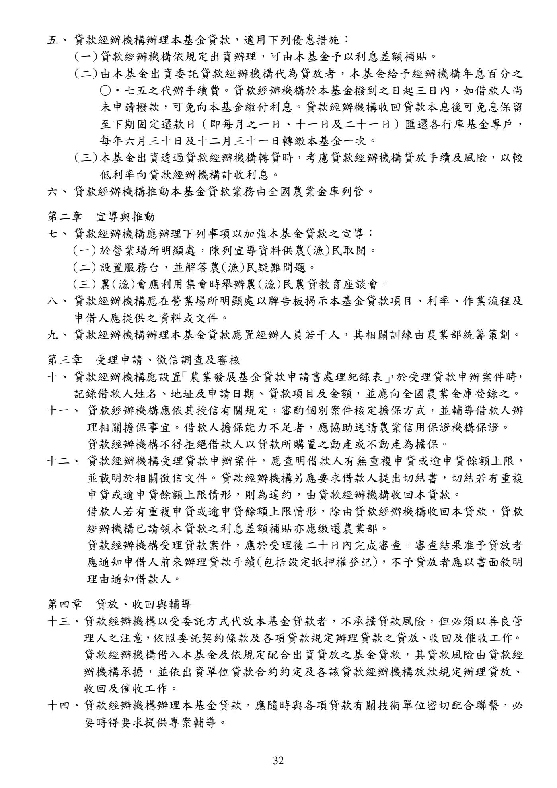
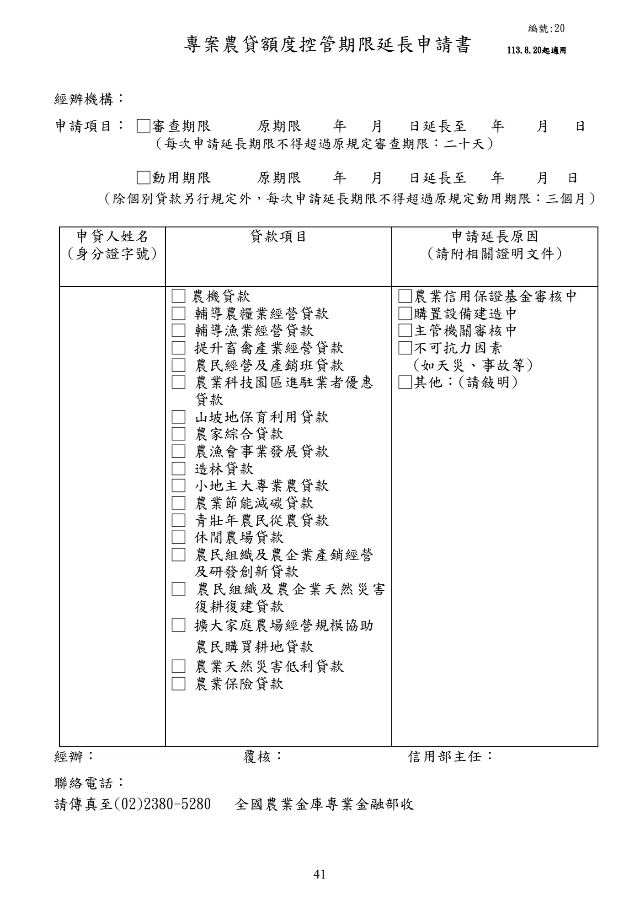
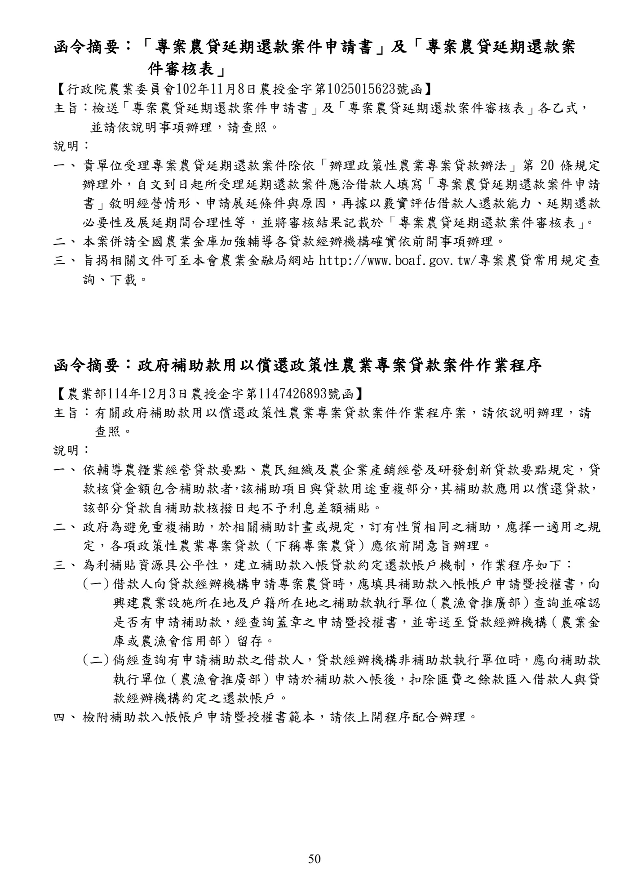
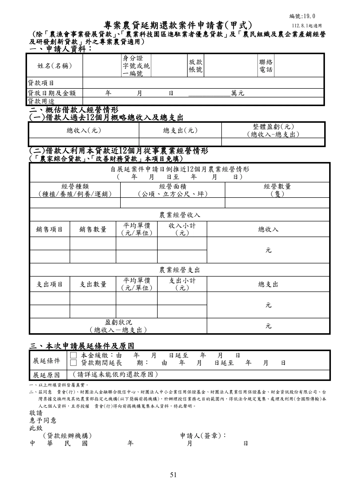
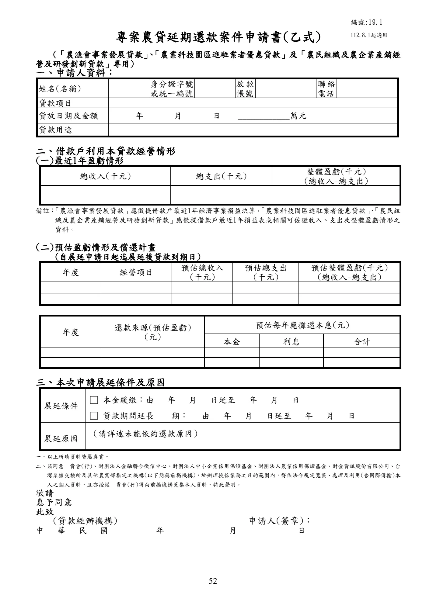
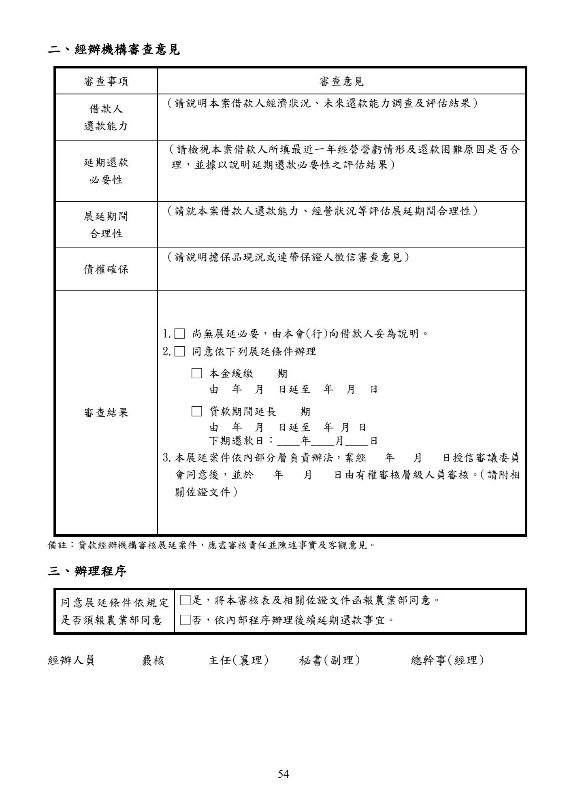
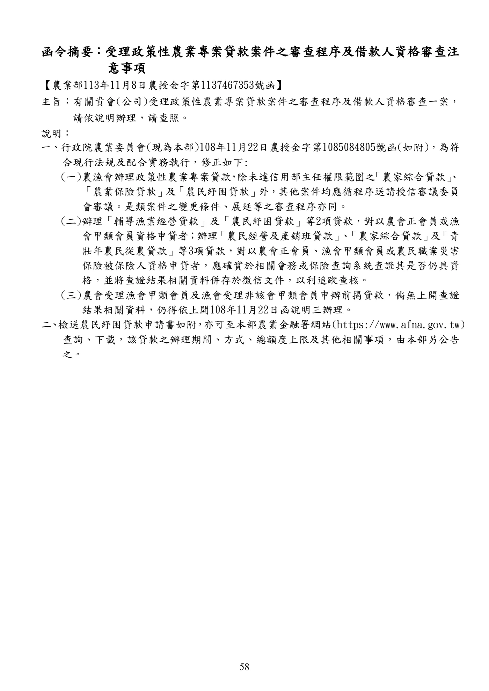
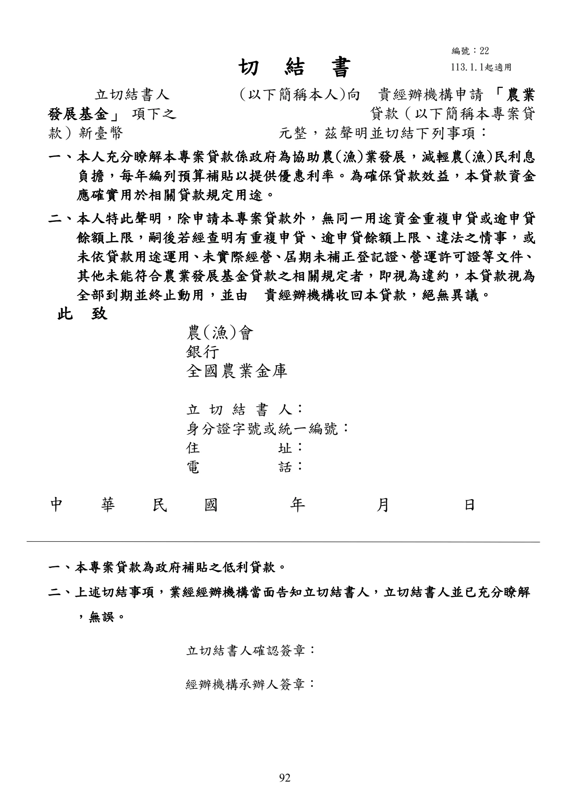
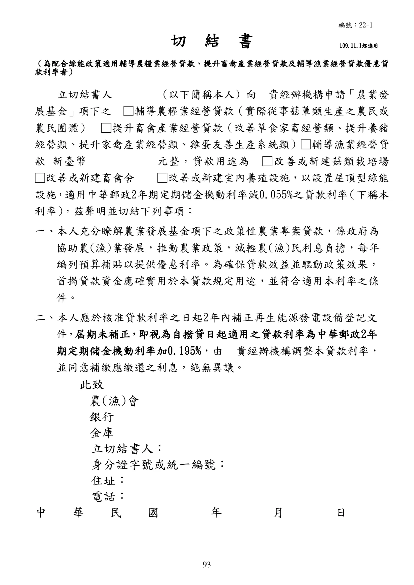

農業發展基金貸款作業規範及相關函釋
手冊頁：30 PDF頁：32／359
農業發展基金貸款作業規範 中華民國 78 年 10 月 4 日行政院農業委員會農輔字第 8060330A 號公告訂定 中華民國 84 年 12 月 26 日行政院農業委員會(84)農輔字第 4060622 號令修訂 中華民國 90 年 11 月 15 日行政院農業委員會(90)農輔字第 900051246 號令修訂 中華民國 92 年 6 月 30 日行政院農業委員會(92)農輔字第 0920050613 號令修訂 中華民國 94 年 10 月 17 日行政院農業委員會(94)農授金字第 0945080489 號令修訂 中華民國 94 年 12 月 30 日行政院農業委員會農授金字第 0945080617 號令修正 中華民國 95 年 8 月 21 日行政院農業委員會農金字第 0955080282 號令修正 中華民國 95 年 11 月 21 日行政院農業委員會農金字第 0955080404 號令修正 中華民國 96 年 3 月 16 日行政院農業委員會農金字第 0965080044 號令修正 中華民國 96 年 9 月 28 日行政院農業委員會農金字第 0965080348 號令修正 中華民國 97 年 8 月 15 日行政院農業委員會農金字第 0975080251 號令修正 中華民國 99 年 2 月 25 日行政院農業委員會農金字第 0995080090 號令修正 中華民國 99 年 6 月 2 日行政院農業委員會農金字第 0995080279 號令修正 中華民國 101 年 3 月 27 日行政院農業委員會農金字第 1015080128 號令修正 中華民國 101 年 10 月 4 日行政院農業委員會農金字第 1015080482 號令修正發布第 15、18 點規定；並自即日生效 中華民國 102 年 4 月 26 日行政院農業委員會農金字第 1025080166 號令修正 中華民國 103 年 10 月 28 日行政院農業委員會農金字第 1035084017 號令修正 中華民國 105 年 3 月 18 日行政院農業委員會農金字第 1055084021Q 號令修正發布第 18 點 規定；並自 105 年 3 月 22日生效 中華民國 107 年 3 月 30 日行政院農業委員會農金字第 1075084075A 號令修正發布第 2 點 規定；並自 107 年 4 月 16日生效 中華民國 109 年 10 月 21 日行政院農業委員會農授金字第 1095085177A 號令修正發布第 4 點規定；並自 109 年 11 月1 日生效 中華民國 110 年 1 月 11 日行政院農業委員會農授金字第 1105084018A 號令修正發布第 18 點規定；並自 110 年 5 月 1日生效 中華民國 110 年 7 月 29 日行政院農業委員會農授金字第 1105084731A 號令修正發布第 18 點規定；並自 110 年 8 月 1日生效 中華民國 112 年 12 月 12 日農業部農授金字第 1125085573 號令修正發布部分規定；並自 113 年 1 月1 日生效 中華民國 113 年 8 月 19 日農業部農授金字第 1137467067 號令修正發布第 4 點規定；並自 113 年 8 月20 日生效 第一章 總 則 一、 農業部為劃一農業發展基金(以下簡稱本基金)各項貸款有關作業，並加強貸款經辦機 構辦理本基金貸款業務之輔導及管理，以增進本基金貸款績效，特訂定本規範。 二、 本規範貸款經辦機構如下： (一) 設有信用部之農(漁)會。 (二) 依法承受農(漁)會信用部之銀行當地分行。
查看PDF原始文字層
農業發展基金貸款作業規範 中華民國 78 年 10 月 4 日行政院農業委員會農輔字第 8060330A 號公告訂定 中華民國 84 年 12 月 26 日行政院農業委員會(84)農輔字第 4060622 號令修訂 中華民國 90 年 11 月 15 日行政院農業委員會(90)農輔字第 900051246 號令修訂 中華民國 92 年 6 月 30 日行政院農業委員會(92)農輔字第 0920050613 號令修訂 中華民國 94 年 10 月 17 日行政院農業委員會(94)農授金字第 0945080489 號令修訂 中華民國 94 年 12 月 30 日行政院農業委員會農授金字第 0945080617 號令修正 中華民國 95 年 8 月 21 日行政院農業委員會農金字第 0955080282 號令修正 中華民國 95 年 11 月 21 日行政院農業委員會農金字第 0955080404 號令修正 中華民國 96 年 3 月 16 日行政院農業委員會農金字第 0965080044 號令修正 中華民國 96 年 9 月 28 日行政院農業委員會農金字第 0965080348 號令修正 中華民國 97 年 8 月 15 日行政院農業委員會農金字第 0975080251 號令修正 中華民國 99 年 2 月 25 日行政院農業委員會農金字第 0995080090 號令修正 中華民國 99 年 6 月 2 日行政院農業委員會農金字第 0995080279 號令修正 中華民國 101 年 3 月 27 日行政院農業委員會農金字第 1015080128 號令修正 中華民國 101 年 10 月 4 日行政院農業委員會農金字第 1015080482 號令修正發布第 15、18 點規定；並自即日生效 中華民國 102 年 4 月 26 日行政院農業委員會農金字第 1025080166 號令修正 中華民國 103 年 10 月 28 日行政院農業委員會農金字第 1035084017 號令修正 中華民國 105 年 3 月 18 日行政院農業委員會農金字第 1055084021Q 號令修正發布第 18 點 規定；並自 105 年 3 月 22日生效 中華民國 107 年 3 月 30 日行政院農業委員會農金字第 1075084075A 號令修正發布第 2 點 規定；並自 107 年 4 月 16日生效 中華民國 109 年 10 月 21 日行政院農業委員會農授金字第 1095085177A 號令修正發布第 4 點規定；並自 109 年 11 月1 日生效 中華民國 110 年 1 月 11 日行政院農業委員會農授金字第 1105084018A 號令修正發布第 18 點規定；並自 110 年 5 月 1日生效 中華民國 110 年 7 月 29 日行政院農業委員會農授金字第 1105084731A 號令修正發布第 18 點規定；並自 110 年 8 月 1日生效 中華民國 112 年 12 月 12 日農業部農授金字第 1125085573 號令修正發布部分規定；並自 113 年 1 月1 日生效 中華民國 113 年 8 月 19 日農業部農授金字第 1137467067 號令修正發布第 4 點規定；並自 113 年 8 月20 日生效 第一章 總 則 一、 農業部為劃一農業發展基金(以下簡稱本基金)各項貸款有關作業，並加強貸款經辦機 構辦理本基金貸款業務之輔導及管理，以增進本基金貸款績效，特訂定本規範。 二、 本規範貸款經辦機構如下： (一) 設有信用部之農(漁)會。 (二) 依法承受農(漁)會信用部之銀行當地分行。
手冊頁：31 PDF頁：33／359
(三) 全國農業金庫。 (四) 臺灣銀行設於屏東縣農業科技園區之分行。 前項第一款貸款經辦機構受理專案農貸案件，除其他貸款辦法或要點另有規定外，應 符合下列規定情形之一： (一) 借款人為其農(漁)會所屬會員。 (二) 借款人戶籍設於其農(漁)會所在直轄市、縣(市)轄區內。但借款人戶籍未設於轄 區內，惟其農業經營場址位於轄區內者，不在此限。 (三) 經農業部專案許可者。 第一項第二款貸款經辦機構受理專案農貸案件，除其他貸款辦法或要點另有規定外， 應符合下列規定： (一) 借款人戶籍設於所承受農(漁)會所在直轄市、縣(市)轄區內。但借款人戶籍未設 於轄區內，惟其農業經營場址位於轄區內者，或經農業部專案許可者，不在此限。 (二) 當地農(漁)會經農業部許可重設信用部，並正式營業屆滿一年後，應停止受理專 案農貸申辦案件。其已承作案件，依既有條件辦理至原契約到期為止。 第一項第一款及第二款貸款經辦機構依第二項第二款及第三項第一款規定，所受理之 借款人戶籍或農業經營場址分別設（位）於下列同款行政區域之一者，視為同一直轄 市或同一縣(市)： (一) 臺北市、新北市及基隆市。 (二) 新竹縣及新竹市。 (三) 嘉義縣及嘉義市。 第一項第四款貸款經辦機構受理專案農貸案件，以屏東縣農業科技園區內進駐業者申 貸之農業科技園區進駐業者優惠貸款為限。 第二項第二款、第三項第一款及第四項所稱農業經營場址，於海洋漁業指漁船設籍地、 漁業根據地、漁獲物起卸港。 貸款經辦機構承作專案農貸有惡性競爭或遭受糾正、處分者，農業部得限制其承作項 目、範圍或額度。 三、 貸款經辦機構辦理本基金貸款，除其他貸款辦法或各項貸款要點另有規定外，依本規 範規定辦理。 貸款經辦機構應接受各級主管機關與受託代管本基金行庫(全國農業金庫)之指導、監 督與查核。 四、 本基金各項貸款項目及額度由農業部依施政需要另定之。 貸款經辦機構受理本基金貸款，其額度不得超過全國農業金庫控管額度。相關控管措 施由全國農業金庫訂定，並報農業部備查。 每一借款人申請本基金貸款總餘額上限為新臺幣八百萬元。但個別貸款所定最高貸款 額度逾新臺幣八百萬元者，從其規定。 前項所定貸款總餘額上限之計算，不包含農民組織及農企業天然災害復耕復建貸款、 農業保險貸款、農民紓困貸款、農民組織及農企業產銷經營及研發創新貸款對象為經 農業部認定配合農產品產銷調節措施之貸款。 第三項規定中華民國九十九年二月二十五日修正生效前，貸款經辦機構已受理本基金 貸款案件，依受理時規定辦理。
查看PDF原始文字層
(三) 全國農業金庫。 (四) 臺灣銀行設於屏東縣農業科技園區之分行。 前項第一款貸款經辦機構受理專案農貸案件，除其他貸款辦法或要點另有規定外，應 符合下列規定情形之一： (一) 借款人為其農(漁)會所屬會員。 (二) 借款人戶籍設於其農(漁)會所在直轄市、縣(市)轄區內。但借款人戶籍未設於轄 區內，惟其農業經營場址位於轄區內者，不在此限。 (三) 經農業部專案許可者。 第一項第二款貸款經辦機構受理專案農貸案件，除其他貸款辦法或要點另有規定外， 應符合下列規定： (一) 借款人戶籍設於所承受農(漁)會所在直轄市、縣(市)轄區內。但借款人戶籍未設 於轄區內，惟其農業經營場址位於轄區內者，或經農業部專案許可者，不在此限。 (二) 當地農(漁)會經農業部許可重設信用部，並正式營業屆滿一年後，應停止受理專 案農貸申辦案件。其已承作案件，依既有條件辦理至原契約到期為止。 第一項第一款及第二款貸款經辦機構依第二項第二款及第三項第一款規定，所受理之 借款人戶籍或農業經營場址分別設（位）於下列同款行政區域之一者，視為同一直轄 市或同一縣(市)： (一) 臺北市、新北市及基隆市。 (二) 新竹縣及新竹市。 (三) 嘉義縣及嘉義市。 第一項第四款貸款經辦機構受理專案農貸案件，以屏東縣農業科技園區內進駐業者申 貸之農業科技園區進駐業者優惠貸款為限。 第二項第二款、第三項第一款及第四項所稱農業經營場址，於海洋漁業指漁船設籍地、 漁業根據地、漁獲物起卸港。 貸款經辦機構承作專案農貸有惡性競爭或遭受糾正、處分者，農業部得限制其承作項 目、範圍或額度。 三、 貸款經辦機構辦理本基金貸款，除其他貸款辦法或各項貸款要點另有規定外，依本規 範規定辦理。 貸款經辦機構應接受各級主管機關與受託代管本基金行庫(全國農業金庫)之指導、監 督與查核。 四、 本基金各項貸款項目及額度由農業部依施政需要另定之。 貸款經辦機構受理本基金貸款，其額度不得超過全國農業金庫控管額度。相關控管措 施由全國農業金庫訂定，並報農業部備查。 每一借款人申請本基金貸款總餘額上限為新臺幣八百萬元。但個別貸款所定最高貸款 額度逾新臺幣八百萬元者，從其規定。 前項所定貸款總餘額上限之計算，不包含農民組織及農企業天然災害復耕復建貸款、 農業保險貸款、農民紓困貸款、農民組織及農企業產銷經營及研發創新貸款對象為經 農業部認定配合農產品產銷調節措施之貸款。 第三項規定中華民國九十九年二月二十五日修正生效前，貸款經辦機構已受理本基金 貸款案件，依受理時規定辦理。
手冊頁：32 PDF頁：34／359
{kind=link}

展開查看PDF原始文字層
五、 貸款經辦機構辦理本基金貸款，適用下列優惠措施： (一) 貸款經辦機構依規定出資辦理，可由本基金予以利息差額補貼。 (二) 由本基金出資委託貸款經辦機構代為貸放者，本基金給予經辦機構年息百分之 ○‧七五之代辦手續費。貸款經辦機構於本基金撥到之日起三日內，如借款人尚 未申請撥款，可免向本基金繳付利息。貸款經辦機構收回貸款本息後可免息保留 至下期固定還款日（即每月之一日、十一日及二十一日）匯還各行庫基金專戶， 每年六月三十日及十二月三十一日轉繳本基金一次。 (三) 本基金出資透過貸款經辦機構轉貸時，考慮貸款經辦機構貸放手續及風險，以較 低利率向貸款經辦機構計收利息。 六、 貸款經辦機構推動本基金貸款業務由全國農業金庫列管。 第二章 宣導與推動 七、 貸款經辦機構應辦理下列事項以加強本基金貸款之宣導： (一) 於營業場所明顯處，陳列宣導資料供農(漁)民取閱。 (二) 設置服務台，並解答農(漁)民疑難問題。 (三) 農(漁)會應利用集會時舉辦農(漁)民農貸教育座談會。 八、 貸款經辦機構應在營業場所明顯處以牌告板揭示本基金貸款項目、利率、作業流程及 申借人應提供之資料或文件。 九、 貸款經辦機構辦理本基金貸款應置經辦人員若干人，其相關訓練由農業部統籌策劃。 第三章 受理申請、徵信調查及審核 十、 貸款經辦機構應設置 「農業發展基金貸款申請書處理紀錄表」 ，於受理貸款申辦案件時， 記錄借款人姓名、地址及申請日期、貸款項目及金額，並應向全國農業金庫登錄之。 十一、 貸款經辦機構應依其授信有關規定，審酌個別案件核定擔保方式，並輔導借款人辦 理相關擔保事宜。借款人擔保能力不足者，應協助送請農業信用保證機構保證。 貸款經辦機構不得拒絕借款人以貸款所購置之動產或不動產為擔保。 十二、 貸款經辦機構受理貸款申辦案件，應查明借款人有無重複申貸或逾申貸 餘額上限， 並載明於相關徵信文件。貸款經辦機構另應要求借款人提出切結書，切結若有重複 申貸或逾申貸餘額上限情形，則為違約，由貸款經辦機構收回本貸款。 借款人若有重複申貸或逾申貸餘額上限情形，除由貸款經辦機構收回本貸款，貸款 經辦機構已請領本貸款之利息差額補貼亦應繳還農業部。 貸款經辦機構受理貸款案件，應於受理後二十日內完成審查。審查結果准予貸放者 應通知申借人前來辦理貸款手續(包括設定抵押權登記)，不予貸放者應以書面敘明 理由通知借款人。 第四章 貸放、收回與輔導 十三、 貸款經辦機構以受委託方式代放本基金貸款者，不承擔貸款風險，但必須以善良管 理人之注意，依照委託契約條款及各項貸款規定辦理貸款之貸放、收回及催收工作。 貸款經辦機構借入本基金及依規定配合出資貸放之基金貸款，其貸款風險由貸款經 辦機構承擔，並依出資單位貸款合約約定及各該貸款經辦機構放款規定辦理貸放、 收回及催收工作。 十四、 貸款經辦機構辦理本基金貸款，應隨時與各項貸款有關技術單位密切配合聯繫，必 要時得要求提供專案輔導。
手冊頁：33 PDF頁：35／359
十五、 貸款經辦機構應將貸款款項撥入借款人帳戶。 貸款款項撥入借款人帳戶後，該款項支出符合下列情形之一者，借款人應以轉帳、 匯款方式，或以由貸款經辦機構付款之劃平行線禁止轉讓記名支票支付交易相對人： (一)農機貸款、輔導漁業經營貸款用於汰建或購買漁船、農業科技園區進駐業者優 惠貸款、農業節能減碳貸款、休閒農場貸款、農民團體及農企業產銷經營及研 發創新貸款、農民團體及農企業天然災害復耕復建貸款及擴大家庭農場經營規 模協助農民購買耕地貸款，屬資本支出。 (二)前款以外貸款屬資本支出，且單筆支出金額達新臺幣五十萬元以上。 借款人提出之憑證確能證明款項支付交易相對人，或於向貸款經辦機構申貸後未獲 撥款前，已先將款項支付交易相對人，並提出確能證明款項支付交易相對人之憑證 者，不受前項有關支付方式規定之限制。 十六、 貸款經辦機構應於貸款之本金、利息到期日十日前通知借款人如期還款或繳息。 十七、 本基金貸款逾期六個月以內者，逾期本金部分改按全國農業金庫基準利率加一成計 息，逾期利息部分以同標準計收違約金；逾期超過六個月者，其本息及違約金計收 方式由借貸雙方以契約另訂之。 十八、 貸款經辦機構除其他貸款辦法或要點另有規定外，應依下列規定辦理貸款用途及經 營狀況查驗： (一) 貸放後六個月內，應確實查驗相關資金用途是否符合核定之貸款用途並作成書 面紀錄。 (二) 前款查驗後於貸款存續期間，應視借款人還款情形，再辦理查驗，確實查驗借 款人是否實際經營及有無違反辦理政策性農業專案貸款辦法第二十一條規定 情事並作成書面紀錄。但下列貸款，於貸款存續期間內，每年應至少辦理一次 查驗： 1. 農漁會事業發展貸款、小地主大專業農貸款、農業節能減碳貸款、青壯年農 民從農貸款、休閒農場貸款及農民組織及農企業產銷經營及研發創新貸款。 2. 輔導農糧業經營貸款用途為改善或新建菇類栽培場、提升畜禽產業經營貸款 用途為改善或新建畜禽舍或輔導漁業經營貸款用途為改善或新建室內養殖 設施，以設置屋頂型綠能設施之貸款。 3. 輔導漁業經營貸款用途為新建室內養殖設施，其屋頂構造為太陽光電發電設 施(備)材質之貸款。 借款人未依貸款用途運用、未實際經營或經營狀況違反辦理政策性農業專案貸 款辦法第二十一條第一項規定者，貸款經辦機構應督促限期改正，無法改正或 未依限改正者，應收回其貸款，貸款經辦機構已請領本貸款之利息差額補貼應 繳還農業部。 借款人申貸時有辦理政策性農業專案貸款辦法第二十一條第二項規定情事，於 核貸後發現者，應收回其貸款，貸款經辦機構已請領本貸款之利息差額補貼應 繳還農業部。於貸款存續期間，經主管機關依豬隻死亡保險強制投保及保險費 補助辦法處分停止給予豬隻飼養相關之政策性農業專案貸款期間內，不予利息 差額補貼。 貸款之查驗人員不得由該貸款招攬人員擔任。 十九、 貸款經辦機構應鼓勵及輔導借款人設置收支明細帳，妥善運用資金。
查看PDF原始文字層
十五、 貸款經辦機構應將貸款款項撥入借款人帳戶。 貸款款項撥入借款人帳戶後，該款項支出符合下列情形之一者，借款人應以轉帳、 匯款方式，或以由貸款經辦機構付款之劃平行線禁止轉讓記名支票支付交易相對人： (一)農機貸款、輔導漁業經營貸款用於汰建或購買漁船、農業科技園區進駐業者優 惠貸款、農業節能減碳貸款、休閒農場貸款、農民團體及農企業產銷經營及研 發創新貸款、農民團體及農企業天然災害復耕復建貸款及擴大家庭農場經營規 模協助農民購買耕地貸款，屬資本支出。 (二)前款以外貸款屬資本支出，且單筆支出金額達新臺幣五十萬元以上。 借款人提出之憑證確能證明款項支付交易相對人，或於向貸款經辦機構申貸後未獲 撥款前，已先將款項支付交易相對人，並提出確能證明款項支付交易相對人之憑證 者，不受前項有關支付方式規定之限制。 十六、 貸款經辦機構應於貸款之本金、利息到期日十日前通知借款人如期還款或繳息。 十七、 本基金貸款逾期六個月以內者，逾期本金部分改按全國農業金庫基準利率加一成計 息，逾期利息部分以同標準計收違約金；逾期超過六個月者，其本息及違約金計收 方式由借貸雙方以契約另訂之。 十八、 貸款經辦機構除其他貸款辦法或要點另有規定外，應依下列規定辦理貸款用途及經 營狀況查驗： (一) 貸放後六個月內，應確實查驗相關資金用途是否符合核定之貸款用途並作成書 面紀錄。 (二) 前款查驗後於貸款存續期間，應視借款人還款情形，再辦理查驗，確實查驗借 款人是否實際經營及有無違反辦理政策性農業專案貸款辦法第二十一條規定 情事並作成書面紀錄。但下列貸款，於貸款存續期間內，每年應至少辦理一次 查驗： 1. 農漁會事業發展貸款、小地主大專業農貸款、農業節能減碳貸款、青壯年農 民從農貸款、休閒農場貸款及農民組織及農企業產銷經營及研發創新貸款。 2. 輔導農糧業經營貸款用途為改善或新建菇類栽培場、提升畜禽產業經營貸款 用途為改善或新建畜禽舍或輔導漁業經營貸款用途為改善或新建室內養殖 設施，以設置屋頂型綠能設施之貸款。 3. 輔導漁業經營貸款用途為新建室內養殖設施，其屋頂構造為太陽光電發電設 施(備)材質之貸款。 借款人未依貸款用途運用、未實際經營或經營狀況違反辦理政策性農業專案貸 款辦法第二十一條第一項規定者，貸款經辦機構應督促限期改正，無法改正或 未依限改正者，應收回其貸款，貸款經辦機構已請領本貸款之利息差額補貼應 繳還農業部。 借款人申貸時有辦理政策性農業專案貸款辦法第二十一條第二項規定情事，於 核貸後發現者，應收回其貸款，貸款經辦機構已請領本貸款之利息差額補貼應 繳還農業部。於貸款存續期間，經主管機關依豬隻死亡保險強制投保及保險費 補助辦法處分停止給予豬隻飼養相關之政策性農業專案貸款期間內，不予利息 差額補貼。 貸款之查驗人員不得由該貸款招攬人員擔任。 十九、 貸款經辦機構應鼓勵及輔導借款人設置收支明細帳，妥善運用資金。
手冊頁：34 PDF頁：36／359
第五章 延期還款及逾期放款之處理 二十、 借款人借入本基金貸款已屆清償期而未償還之貸款，以逾期放款處理。 二十一、 借款人申請延期還款案件應於貸款到期日前一個月內向原貸款經辦機構提出。 前項申請延期還款案，由貸款經辦機構審核。但下列延期還款案件須報農業部核 准： (一) 展延期間超過原貸款期限者。 (二) 展延期間未超過原貸款期限，但剩餘期限非以平均攤還方式辦理者。 二十二、 本基金貸款之逾期放款分別依下列規定處理： (一) 經辦銀行應依銀行資產評估損失準備提列及逾期放款催收款呆帳處理辦法 有關規定辦理。 (二) 經辦農(漁)會應依農會漁會信用部資產評估損失準備提列及逾期放款催收 款呆帳處理辦法有關規定辦理。 (三) 受託經辦機構應依出資機構之協議辦理。 (四) 農業部出資委託經辦機構代放部分，有關之呆帳轉銷程序，依國營事業逾期 欠款債權催收款及呆帳處理有關會計事務補充規定辦理。 二十三、 接受委託代放本基金貸款之經辦機構，應依下列原則處理本基金貸款逾期放款： (一) 受託貸款經辦機構應代為辦理逾期放款之訴追工作。惟如出資機構願自行辦 理訴追時，受託貸款經辦機構應即辦理有關債權轉讓手續，並提供有關資料 以利訴追。 (二) 受託貸款經辦機構對於逾期放款案件應確實依照規定辦理催收工作，並將催 收經過按日期先後順序詳實填記於「逾期放款催收紀錄表」 ，同時應建立逾 期放款檔案，妥善處理。 (三) 受託經辦機構於訴訟時應盡善良管理人之注意，如遇需作條件之承諾時，應 先徵求出資機構意見，事後並應作成紀錄及報告。惟假扣押之聲請等緊急事 項得於事後提出書面說明。 (四) 逾期放款經依法訴追仍無法收回時，受託貸款經辦機構應將其催收與訴追經 過之紀錄，有關證明文件及債權憑證等妥為保存，並通知出資機構，嗣後發 現債務人另有財產時應繼續執行，惟出資機構需要上開債權憑證及有關資料 時，受託經辦機構應即交付。 二十四、 受託經辦機構辦理訴追本基金貸款逾期放款期間，所支付繳納法院之擔保金、訴 訟費用與執行費用及限額內其他訴訟有關雜費，由受託經辦機構檢據向各出資機 構申請依貸款出資比例核付。 前項其他訴訟有關雜費之限額，其所屬訴訟標的金額在新台幣六十萬元以內者， 每案為三千元，其所屬訴訟標的金額超過六十萬元者，每案依千分之五計算。 二十五、 貸款經辦機構處理本基金貸款逾期放款應按月將申請延期還款案件核准內容、逾 期放款增減情形編製「逾期放款處理月報表」 ，於次月五日以前提送全國農業金 庫，經全國農業金庫就書面查核彙編後再分送各有關機關備查。 第六章 帳簿報表處理 二十六、 貸款經辦機構辦理本基金各種貸款，採人工記帳者應設置放款分戶卡，並按貸款 種類編號。 二十七、 貸款經辦農(漁)會借入本基金貸款專案資金應在有關會計科目項下依資金種類
查看PDF原始文字層
第五章 延期還款及逾期放款之處理 二十、 借款人借入本基金貸款已屆清償期而未償還之貸款，以逾期放款處理。 二十一、 借款人申請延期還款案件應於貸款到期日前一個月內向原貸款經辦機構提出。 前項申請延期還款案，由貸款經辦機構審核。但下列延期還款案件須報農業部核 准： (一) 展延期間超過原貸款期限者。 (二) 展延期間未超過原貸款期限，但剩餘期限非以平均攤還方式辦理者。 二十二、 本基金貸款之逾期放款分別依下列規定處理： (一) 經辦銀行應依銀行資產評估損失準備提列及逾期放款催收款呆帳處理辦法 有關規定辦理。 (二) 經辦農(漁)會應依農會漁會信用部資產評估損失準備提列及逾期放款催收 款呆帳處理辦法有關規定辦理。 (三) 受託經辦機構應依出資機構之協議辦理。 (四) 農業部出資委託經辦機構代放部分，有關之呆帳轉銷程序，依國營事業逾期 欠款債權催收款及呆帳處理有關會計事務補充規定辦理。 二十三、 接受委託代放本基金貸款之經辦機構，應依下列原則處理本基金貸款逾期放款： (一) 受託貸款經辦機構應代為辦理逾期放款之訴追工作。惟如出資機構願自行辦 理訴追時，受託貸款經辦機構應即辦理有關債權轉讓手續，並提供有關資料 以利訴追。 (二) 受託貸款經辦機構對於逾期放款案件應確實依照規定辦理催收工作，並將催 收經過按日期先後順序詳實填記於「逾期放款催收紀錄表」 ，同時應建立逾 期放款檔案，妥善處理。 (三) 受託經辦機構於訴訟時應盡善良管理人之注意，如遇需作條件之承諾時，應 先徵求出資機構意見，事後並應作成紀錄及報告。惟假扣押之聲請等緊急事 項得於事後提出書面說明。 (四) 逾期放款經依法訴追仍無法收回時，受託貸款經辦機構應將其催收與訴追經 過之紀錄，有關證明文件及債權憑證等妥為保存，並通知出資機構，嗣後發 現債務人另有財產時應繼續執行，惟出資機構需要上開債權憑證及有關資料 時，受託經辦機構應即交付。 二十四、 受託經辦機構辦理訴追本基金貸款逾期放款期間，所支付繳納法院之擔保金、訴 訟費用與執行費用及限額內其他訴訟有關雜費，由受託經辦機構檢據向各出資機 構申請依貸款出資比例核付。 前項其他訴訟有關雜費之限額，其所屬訴訟標的金額在新台幣六十萬元以內者， 每案為三千元，其所屬訴訟標的金額超過六十萬元者，每案依千分之五計算。 二十五、 貸款經辦機構處理本基金貸款逾期放款應按月將申請延期還款案件核准內容、逾 期放款增減情形編製「逾期放款處理月報表」 ，於次月五日以前提送全國農業金 庫，經全國農業金庫就書面查核彙編後再分送各有關機關備查。 第六章 帳簿報表處理 二十六、 貸款經辦機構辦理本基金各種貸款，採人工記帳者應設置放款分戶卡，並按貸款 種類編號。 二十七、 貸款經辦農(漁)會借入本基金貸款專案資金應在有關會計科目項下依資金種類
手冊頁：35 PDF頁：37／359

展開查看PDF原始文字層
別設置「自農業發展基金借入」 、 「自全國農業金庫借入」 、 「中國農民銀行專案融 資」 、 「自中國農民銀行借入」 、 「自台灣土地銀行借入」 及 「自合作金庫銀行借入」 明細帳。 二十八、 貸款經辦機構應按月依據帳簿有關金額填造 「工作月報」 ，於次月五日前報送全國 農業金庫，經辦農(漁)會並報送所屬縣(市)政府各一份。 二十九、 貸款經辦機構辦理本基金貸款應依下列原則辦理定期性對帳或內部查核工作： (一) 貸款主辦人應將所經管帳項與會計人員每月至少核對一次。 (二) 與資金往來農業行庫及本基金每半年辦理書面對帳一次。 (三) 本基金貸款應列為內部稽核查核項目，其工作底稿格式由全國農業金庫訂定。 三十、 辦理本基金貸款所需之「借據」 、 「貸款工作月報」及「貸款約定書」格式由全國 農業金庫統一訂定。 第七章 本基金資金之處理 三十一、 （刪除） 三十二、 （刪除） 三十三、 受託代放之貸款經辦機構應考慮所訂貸款資金動用期限及貸款期限，與本基金商 定合理委託之期間，並簽訂代辦放款委任契約。接受本基金委託代放之貸款經辦 機構，依下列原則處理本基金資金： (一) 受託代放之貸款經辦機構需要本基金資金時應視實際需款情形，填具撥款申 請書向受託代管本基金行庫辦理撥款之申請。 (二) 受託機構接到資金時，應即代放借款人，如於三日內貸予借款人者，自貸予 之日開始計息，如逾三日仍無法貸予借款人者，自第四日起按貸予借款人利 率由受託機構付息。 (三) 受託機構於接到撥款後，如於十日內仍未能貸出時，應於次日將本金連同依 前目規定所計算之利息悉數匯還本基金。 (四) 受託貸款經辦機構應於每月一日、十一日及二十一日將截至前一日止由借款 人所收回貸款本息歸還本基金各行庫基金專戶。 第八章 利息差額補貼 三十四、 貸款經辦機構中華民國七十八年十二月三十一日以前，依本基金各項貸款規定辦 理之貸款扣除非依農業發展基金支援經辦機構（農漁會及農業行庫）辦理農業發 展基金貸款專案融資要點借入本基金辦理部分之餘額，以及七十九年一月一日以 後，依本基金各項貸款規定辦理之貸款餘額，由本基金予以補貼利息差額，其利 息差額補貼標準由農業部訂之。 三十五、 貸款經辦機構辦理之本基金項下各項貸款，未能如期收回，其逾期超過六個月者， 視為貸款經辦機構一般放款，不予利息差額補貼。 三十六、 為簡化作業，超過六個月逾期農業發展基金放款，積數得由各貸款經辦機構以每 月提報主管機關「逾期放款及催收款概況表」內超過六個月逾期農業發展基金放 款之月底餘額為基礎推算。 三十七、 貸款經辦機構應於每年六月三十日及十二月三十一日各結算其本基金貸款應補 貼利息差額一次，並於同年八月底前及次年二月底前檢附 「利息差額補貼計算表」 （格式如附件一）與「農業發展基金貸款利息差額補貼申請書」 （格式如附件二）
手冊頁：36 PDF頁：38／359
向全國農業金庫申請補貼利息差額。全國農業金庫應負責書面審核有關資料，並 代理本基金辦理收支出納作業。 三十八、 基金貸款利息差額補貼之結算，貸款經辦機構應就各貸款項目分別設置「超過六 個月逾期農業發展基金貸款餘額積數推算表」 （格式如附件三） 、 「農業發展基金貸 款餘額積數計算表」 （格式如附件四）及「利息差額補貼計算表」 。 第九章 債務清理 三十九、 借款人依消費者債務清理條例請求債務協商、聲請更生或清算者，本基金貸款得 不受第十七點、第二十一點規定及其貸款相關法規所定貸款利率、貸款期限及還 款方式等規定之限制。 四十、 借款人依消費者債務清理條例請求債務協商、聲請更生或清算者，其程序有須經 債權機構同意事項，由貸款出資機構依債權保障原則予以決定。 四十一、 借款人依消費者債務清理條例第一百五十一條第一項規定請求債務協商者，所協 商之本基金貸款未逾期或逾期六個月內者，自協商開始日起，不予利息差額補貼， 不適用第三十五點規定。但協商後依原契約履行者，不在此限。 借款人依消費者債務清理條例第一百五十一條第六項規定聲請更生或清算者，所 清理之本基金貸款未逾期或逾期六個月內者，自法院裁定保全處分之日起，不予 利息差額補貼，不適用第三十五點規定。 法院未作保全處分裁定者，前項不予利息差額補貼日期，以法院裁定開始更生或 清算程序之日為準。 四十二、 借款人依消費者債務清理條例請求債務協商、聲請更生或清算者，貸款經辦機構 應將本基金貸款有關下列事項，自知悉之日起一個月內報送全國農業金庫，並副 知農業部： (一) 協商開始日期、協商成立與否、經法院認可或依公證法作成公證之債務清償 方案。 (二) 法院裁定之保全處分日期、更生程序開始日期或清算程序開始日期。 (三) 經法院認可之更生方案或清算債權內容。
查看PDF原始文字層
向全國農業金庫申請補貼利息差額。全國農業金庫應負責書面審核有關資料，並 代理本基金辦理收支出納作業。 三十八、 基金貸款利息差額補貼之結算，貸款經辦機構應就各貸款項目分別設置「超過六 個月逾期農業發展基金貸款餘額積數推算表」 （格式如附件三） 、 「農業發展基金貸 款餘額積數計算表」 （格式如附件四）及「利息差額補貼計算表」 。 第九章 債務清理 三十九、 借款人依消費者債務清理條例請求債務協商、聲請更生或清算者，本基金貸款得 不受第十七點、第二十一點規定及其貸款相關法規所定貸款利率、貸款期限及還 款方式等規定之限制。 四十、 借款人依消費者債務清理條例請求債務協商、聲請更生或清算者，其程序有須經 債權機構同意事項，由貸款出資機構依債權保障原則予以決定。 四十一、 借款人依消費者債務清理條例第一百五十一條第一項規定請求債務協商者，所協 商之本基金貸款未逾期或逾期六個月內者，自協商開始日起，不予利息差額補貼， 不適用第三十五點規定。但協商後依原契約履行者，不在此限。 借款人依消費者債務清理條例第一百五十一條第六項規定聲請更生或清算者，所 清理之本基金貸款未逾期或逾期六個月內者，自法院裁定保全處分之日起，不予 利息差額補貼，不適用第三十五點規定。 法院未作保全處分裁定者，前項不予利息差額補貼日期，以法院裁定開始更生或 清算程序之日為準。 四十二、 借款人依消費者債務清理條例請求債務協商、聲請更生或清算者，貸款經辦機構 應將本基金貸款有關下列事項，自知悉之日起一個月內報送全國農業金庫，並副 知農業部： (一) 協商開始日期、協商成立與否、經法院認可或依公證法作成公證之債務清償 方案。 (二) 法院裁定之保全處分日期、更生程序開始日期或清算程序開始日期。 (三) 經法院認可之更生方案或清算債權內容。
手冊頁：37 PDF頁：39／359
附件一 利 息 差 額 補 貼 計 算 表 貸款類別： 貸款期間： 年 月 日至 年 月 日 填報機構： 期 間 別
項 目 別 年 月 日 │ 年 月 日 年 月 日 │ 年 月 日 年 月 日 │ 年 月 日 年 月 日 │ 年 月 日 (1) 本基金貸款積數 (2) 逾期六個月以上本基金貸款 積數 (3) 基金出資部分貸款積數 (4) 申請補貼積數 = (1) － (2) － (3) = A + B
A:還款正常案件補貼積數 B:逾期六個月內案件補貼積 數 (5) 貸款經補貼後之年利率水準 (6) 本基金貸款年利率 (7) 全國農業金庫基準利率加一 成之利率 (8) A 之補貼利息年利率 = (5) － (6) (9) B 之補貼利息年利率 = (5) － (7) (10) 應補貼利息差額 = A ×(8) ÷365+ B ×(9)÷365
查看PDF原始文字層
附件一
利 息 差 額 補 貼 計 算 表
貸款類別：
貸款期間： 年 月 日至 年 月 日 填報機構：
期 間 別
項 目 別
年 月 日
│
年 月 日
年 月 日
│
年 月 日
年 月 日
│
年 月 日
年 月 日
│
年 月 日
(1) 本基金貸款積數
(2) 逾期六個月以上本基金貸款
積數
(3) 基金出資部分貸款積數
(4) 申請補貼積數
= (1) － (2) － (3)
= A + B
A:還款正常案件補貼積數
B:逾期六個月內案件補貼積
數
(5) 貸款經補貼後之年利率水準
(6) 本基金貸款年利率
(7) 全國農業金庫基準利率加一
成之利率
(8) A 之補貼利息年利率
= (5) － (6)
(9) B 之補貼利息年利率
= (5) － (7)
(10) 應補貼利息差額
= A ×(8) ÷365+ B ×(9)÷365手冊頁：38 PDF頁：40／359

展開查看PDF原始文字層
附件二
農業發展基金貸款利息差額補貼申請書
行
本庫辦理農業發展基金項下各項貸款，茲依據「農業發展基金貸款作業規範」
會
申請本期（自 年 月 日至 年 月 日止）利息差額補貼金額
新臺幣 元整
檢附「農業發展基金貸款餘額積數計算表」 、 「超過六個月逾期農業發展基金貸款餘額積數推算
表」 、 「逾期六個月以內農業發展基金貸款餘額積數推算表」 、 「利息差額補貼計算表」 。
此 致
全國農業金庫
行
庫
農（漁）會
中華民國 年 月 日手冊頁：39 PDF頁：41／359
附件三 超過六個月逾期農業發展基金貸款餘額積數推算表 貸款類別：
期間： 年 月 日至 年 月 日 填報機構： 月 份 別 日 數 月底餘額 當月積數(月底餘額×當月日數)
一或七
二或八
三或九
四或十
五或十一
六或十二
查看PDF原始文字層
附件三
超過六個月逾期農業發展基金貸款餘額積數推算表
貸款類別：
期間： 年 月 日至 年 月 日 填報機構：
月 份 別 日 數 月底餘額 當月積數(月底餘額×當月日數)
一或七
二或八
三或九
四或十
五或十一
六或十二手冊頁：40 PDF頁：42／359
附件四 農業發展基金貸款餘額積數計算表 貸款類別： 期 間： 年 月 日至 年 月 日 填報機構： 年 月 日 農 業 發 展 基 金 貸 款 餘 額 日 數 積 數
小 ( 合 ) 計
查看PDF原始文字層
附件四 農業發展基金貸款餘額積數計算表 貸款類別： 期 間： 年 月 日至 年 月 日 填報機構： 年 月 日 農 業 發 展 基 金 貸 款 餘 額 日 數 積 數 小 ( 合 ) 計
手冊頁：41 PDF頁：43／359
{kind=link}

展開查看PDF原始文字層
113.8.20起適用
專案農貸額度控管期限延長申請書
經辦機構：
申請項目： □審查期限 原期限 年 月 日延長至 年 月 日
（每次申請延長期限不得超過原規定審查期限：二十天）
□動用期限 原期限 年 月 日延長至 年 月 日
（除個別貸款另行規定外，每次申請延長期限不得超過原規定動用期限：三個月）
申貸人姓名
(身分證字號)
貸款項目 申請延長原因
(請附相關證明文件)
□ 農機貸款
□ 輔導農糧業經營貸款
□ 輔導漁業經營貸款
□ 提升畜禽產業經營貸款
□ 農民經營及產銷班貸款
□ 農業科技園區進駐業者優惠
貸款
□ 山坡地保育利用貸款
□ 農家綜合貸款
□ 農漁會事業發展貸款
□ 造林貸款
□ 小地主大專業農貸款
□ 農業節能減碳貸款
□ 青壯年農民從農貸款
□ 休閒農場貸款
□ 農民組織及農企業產銷經營
及研發創新貸款
□ 農民組織及農企業 天然災害
復耕復建貸款
□ 擴大家庭農場經營規模協助
農民購買耕地貸款
□ 農業天然災害低利貸款
□ 農業保險貸款
□農業信用保證基金審核中
□購置設備建造中
□主管機關審核中
□不可抗力因素
(如天災、事故等)
□其他：(請敍明)
經辦： 覆核： 信用部主任：
聯絡電話：
請傳真至(02)2380-5280 全國農業金庫專業金融部收
編號:20手冊頁：42 PDF頁：44／359
農業發展基金貸款案件依消費者債務清理條例處理報送單 （本表於知悉日起一個月內報送全國農業金庫） 經辦機構 ： 借 款 人 ： 貸款項目 ： 貸放日期 ： 原貸款金額： 一、協商 1.協商開始日期 本金餘額 元
2.協商成立日期 是否依原契約履行 □是 □否 請檢附債務清償方案（附法院裁定書及協議書或依公證法作成公證）
3.協商不成立日期(結案)
經辦： 經（副）理： 電話： 信用部主任：
二、更生 1.法院裁定保全處分日 裁定日本金餘額 元
2.更生程序開始日 更生程序開始日 本金餘額 元
3.法院認可更生方案日 請檢附法院認可之更生方案
經辦： 經（副）理： 電話： 信用部主任：
三、清算 1.法院裁定保全處分日 裁定日本金餘額 元
2.清算程序開始日 清算程序開始日 本金餘額 元
3.法院裁定終結清算日 請檢附法院裁定書 經辦： 經（副）理： 電話： 信用部主任：
查看PDF原始文字層
農業發展基金貸款案件依消費者債務清理條例處理報送單
（本表於知悉日起一個月內報送全國農業金庫）
經辦機構 ：
借 款 人 ：
貸款項目 ：
貸放日期 ：
原貸款金額：
一、協商
1.協商開始日期 本金餘額 元
2.協商成立日期 是否依原契約履行 □是 □否
請檢附債務清償方案（附法院裁定書及協議書或依公證法作成公證）
3.協商不成立日期(結案)
經辦： 經（副）理：
電話： 信用部主任：
二、更生
1.法院裁定保全處分日 裁定日本金餘額 元
2.更生程序開始日 更生程序開始日
本金餘額
元
3.法院認可更生方案日
請檢附法院認可之更生方案
經辦： 經（副）理：
電話： 信用部主任：
三、清算
1.法院裁定保全處分日 裁定日本金餘額 元
2.清算程序開始日 清算程序開始日
本金餘額
元
3.法院裁定終結清算日
請檢附法院裁定書
經辦： 經（副）理：
電話： 信用部主任：手冊頁：43 PDF頁：45／359
函令摘要：修正「政策性農業專案貸款之利息差額補貼基準」 【中華民國113年8月19日農授金字第1137467071號令修正發布，並自113年8月20日生效】 政策性農業專案貸款之利息差額補貼基準修正規定 自113 年8 月20 日起實施 政策性農業專案貸款之補貼基準為「中華郵政二年期定期儲金機動利率」加計加碼年率 標準機動計息，各種貸款加碼年率，及依中華郵政二年期定期儲金機動利率(113 年 3 月 27 日為1.72%)計算之補貼基準如下： 貸款種類 農(漁)會 農業金庫 備註 加碼年率 (%) 目前補貼 基準(%) 加碼年率 (%) 目前補貼 基準(%) 1.農家綜合貸款 2.農民紓困貸款 加 2.375 4.095 加 2.125 3.845 3.擴大家庭農場經營規模 協助農民購買耕地貸款 4.農業保險貸款 5.輔導漁業經營貸款 6.農民經營及產銷班貸款 7.山坡地保育利用貸款 8.造林貸款 9.小地主大專業農貸款 10.改善財務貸款 加 2.625 4.345 加 2.375 4.095
11.農機貸款 加 2.845 4.565 加 2.375 4.095 12.輔導農糧業經營貸款 加3.095 4.815 加2.375 4.095 溫網室 設施 補助計畫或 輔導措施 (方案)之貸 款案 加2.625 4.345 加2.375 4.095 其他 13.提升畜禽產業經營貸款 加 3.095 4.815 加 2.375 4.095 14.青壯年農民從農貸款 加 3.095 4.815 加 2.375 4.095 辦理政策性 農業專案貸 款辦法第 十 六條第一項 第一款至第 三款之貸款 案 加 2.625 4.345 加 2.375 4.095 辦理政策性 農業專案貸
查看PDF原始文字層
函令摘要：修正「政策性農業專案貸款之利息差額補貼基準」 【中華民國113年8月19日農授金字第1137467071號令修正發布，並自113年8月20日生效】 政策性農業專案貸款之利息差額補貼基準修正規定 自113 年8 月20 日起實施 政策性農業專案貸款之補貼基準為「中華郵政二年期定期儲金機動利率」加計加碼年率 標準機動計息，各種貸款加碼年率，及依中華郵政二年期定期儲金機動利率(113 年 3 月 27 日為1.72%)計算之補貼基準如下： 貸款種類 農(漁)會 農業金庫 備註 加碼年率 (%) 目前補貼 基準(%) 加碼年率 (%) 目前補貼 基準(%) 1.農家綜合貸款 2.農民紓困貸款 加 2.375 4.095 加 2.125 3.845 3.擴大家庭農場經營規模 協助農民購買耕地貸款 4.農業保險貸款 5.輔導漁業經營貸款 6.農民經營及產銷班貸款 7.山坡地保育利用貸款 8.造林貸款 9.小地主大專業農貸款 10.改善財務貸款 加 2.625 4.345 加 2.375 4.095 11.農機貸款 加 2.845 4.565 加 2.375 4.095 12.輔導農糧業經營貸款 加3.095 4.815 加2.375 4.095 溫網室 設施 補助計畫或 輔導措施 (方案)之貸 款案 加2.625 4.345 加2.375 4.095 其他 13.提升畜禽產業經營貸款 加 3.095 4.815 加 2.375 4.095 14.青壯年農民從農貸款 加 3.095 4.815 加 2.375 4.095 辦理政策性 農業專案貸 款辦法第 十 六條第一項 第一款至第 三款之貸款 案 加 2.625 4.345 加 2.375 4.095 辦理政策性 農業專案貸
手冊頁：44 PDF頁：46／359
款辦法第 十 六條第一項 第四款之貸 款案 15.農漁會事業發展貸款 加 1.625 3.345 加 1.625 3.345 16.農業科技園區進駐業者 優惠貸款 加1.375 3.095 加1.375 3.095 週轉金採循 環動用之貸 款案 加1.625 3.345 加1.625 3.345 其他 17.農業節能減碳貸款 加 2.465 4.185 加 2.375 4.095 農(漁)民 加 2.125 3.845 加 2.125 3.845 農(漁)民團 體及農企業 18.休閒農場貸款 加 2.625 4.345 加 2.375 4.095 自然人 加 2.125 3.845 加 2.125 3.845 法人 19.農民組織及農企業產銷 經營及研發創新貸款 加1.875 3.595 加1.875 3.595 週轉金採循 環動用之貸 款案 加2.125 3.845 加2.125 3.845 其他 20.農民組織及農企業天然 災害復耕復建貸款 加 2.125 3.845 加 2.125 3.845 21.農業天然災害低利貸款 加 3.280 5.000 加 2.375 4.095 其他 加 3.170 4.890 加 2.265 3.985 莫拉克、凡 那比 颱風 （兼有莫拉 克颱風） 備註： 1.有關依法承受農(漁)會信用部之銀行當地分行承作政策性農業專案貸款，及臺灣銀行設於 屏東縣農業科技園區之分行承作「農業科技園區進駐業者優惠貸款」之補貼基準，比照農業 金庫辦理。 2.合作金庫商業銀行、臺灣土地銀行及臺灣銀行早期承作政策性農業專案貸款案件餘額，其補 貼基準為「中華郵政二年期定期儲金機動利率」加 2.375%。 3.補貼基準為貸款利率與利息差額補貼之合計數。
查看PDF原始文字層
款辦法第 十 六條第一項 第四款之貸 款案 15.農漁會事業發展貸款 加 1.625 3.345 加 1.625 3.345 16.農業科技園區進駐業者 優惠貸款 加1.375 3.095 加1.375 3.095 週轉金採循 環動用之貸 款案 加1.625 3.345 加1.625 3.345 其他 17.農業節能減碳貸款 加 2.465 4.185 加 2.375 4.095 農(漁)民 加 2.125 3.845 加 2.125 3.845 農(漁)民團 體及農企業 18.休閒農場貸款 加 2.625 4.345 加 2.375 4.095 自然人 加 2.125 3.845 加 2.125 3.845 法人 19.農民組織及農企業產銷 經營及研發創新貸款 加1.875 3.595 加1.875 3.595 週轉金採循 環動用之貸 款案 加2.125 3.845 加2.125 3.845 其他 20.農民組織及農企業天然 災害復耕復建貸款 加 2.125 3.845 加 2.125 3.845 21.農業天然災害低利貸款 加 3.280 5.000 加 2.375 4.095 其他 加 3.170 4.890 加 2.265 3.985 莫拉克、凡 那比 颱風 （兼有莫拉 克颱風） 備註： 1.有關依法承受農(漁)會信用部之銀行當地分行承作政策性農業專案貸款，及臺灣銀行設於 屏東縣農業科技園區之分行承作「農業科技園區進駐業者優惠貸款」之補貼基準，比照農業 金庫辦理。 2.合作金庫商業銀行、臺灣土地銀行及臺灣銀行早期承作政策性農業專案貸款案件餘額，其補 貼基準為「中華郵政二年期定期儲金機動利率」加 2.375%。 3.補貼基準為貸款利率與利息差額補貼之合計數。
手冊頁：45 PDF頁：47／359
函令摘要：農業發展基金貸款各貸款相關規定所提最高貸款額度疑義案 【行政院農業委員會95年6月6日農授金字第0955080181號函】 主旨：農業發展基金貸款各貸款相關規定所提最高貸款額度，採貸款餘額計算，即借款人 本次新貸金額加計歸戶貸款餘額不得超過該項貸款相關規定之最高貸款額度，請 查 照。 函令摘要：農業發展基金各貸款相關規定所稱重覆申貸疑義 【行政院農業委員會95年6月6日農授金字第0955080186號函】 主旨：農業發展基金各貸款相關規定所稱重覆申貸，係指借款人以同一用途資金向同一或 不同經辦機構重覆辦理申貸，請 查照。 函令摘要：農漁會信用部農業發展基金貸款補貼息之會計入帳方式 【行政院農業委員會95年6月26日農授金字第0955013311號函】 主旨：有關農漁會信用部農業發展基金貸款補貼息之會計入帳方式，應依農會財務處理辦 法第3條及漁會財務處理辦法第3條規定，採權責發生制並以利息收入科目入帳，以 維財務損益及金融統計之正確性，請 查照。 說明：依據本會農業金融局案陳中央存款保險股份有限公司 95 年 6 月 16 日存保風管字第 0950020479 號函辦理。 函令摘要：農業發展基金貸款已轉入催收款者可否請領利息差額補貼疑義 案 【行政院農業委員會95年7月4日農授金字第0955080235號函】 主旨：關於農業發展基金貸款已轉入催收款者，貸款經辦機構可否請領利息差額補貼疑義 案，詳如說明，請 查照。 說明：依農業發展基金貸款作業規範第35 點規定，貸款經辦機構辦理之本基金項下各項貸 款，未能如期收回，其逾期超過 6 個月者，視為貸款經辦機構一般放款，不予利息 差額補貼。依前開規定意旨，逾期貸款已轉入催收款惟尚未超過 6 個月者，仍可請 領利息差額補貼。
查看PDF原始文字層
函令摘要：農業發展基金貸款各貸款相關規定所提最高貸款額度疑義案 【行政院農業委員會95年6月6日農授金字第0955080181號函】 主旨：農業發展基金貸款各貸款相關規定所提最高貸款額度，採貸款餘額計算，即借款人 本次新貸金額加計歸戶貸款餘額不得超過該項貸款相關規定之最高貸款額度，請 查 照。 函令摘要：農業發展基金各貸款相關規定所稱重覆申貸疑義 【行政院農業委員會95年6月6日農授金字第0955080186號函】 主旨：農業發展基金各貸款相關規定所稱重覆申貸，係指借款人以同一用途資金向同一或 不同經辦機構重覆辦理申貸，請 查照。 函令摘要：農漁會信用部農業發展基金貸款補貼息之會計入帳方式 【行政院農業委員會95年6月26日農授金字第0955013311號函】 主旨：有關農漁會信用部農業發展基金貸款補貼息之會計入帳方式，應依農會財務處理辦 法第3條及漁會財務處理辦法第3條規定，採權責發生制並以利息收入科目入帳，以 維財務損益及金融統計之正確性，請 查照。 說明：依據本會農業金融局案陳中央存款保險股份有限公司 95 年 6 月 16 日存保風管字第 0950020479 號函辦理。 函令摘要：農業發展基金貸款已轉入催收款者可否請領利息差額補貼疑義 案 【行政院農業委員會95年7月4日農授金字第0955080235號函】 主旨：關於農業發展基金貸款已轉入催收款者，貸款經辦機構可否請領利息差額補貼疑義 案，詳如說明，請 查照。 說明：依農業發展基金貸款作業規範第35 點規定，貸款經辦機構辦理之本基金項下各項貸 款，未能如期收回，其逾期超過 6 個月者，視為貸款經辦機構一般放款，不予利息 差額補貼。依前開規定意旨，逾期貸款已轉入催收款惟尚未超過 6 個月者，仍可請 領利息差額補貼。
手冊頁：46 PDF頁：48／359
函令摘要：除改善財務貸款得用於償還既有貸款本息外，各項政策性專案 農貸均應依規定貸款用途辦理，不得用於「借新還舊」用途 【行政院農業委員會95年8月17日農授金字第0955014492號函】 主旨：除依改善財務貸款要點規定得將貸款用途用於償還既有貸款本息者外，其餘各項政 策性農業專案貸款均應依規定貸款用途辦理，不得用於 「借新還舊」 用途，請 查照。 說明： 一、 依據本會農業金融局案陳○○縣○○農會95年8月15日○○字第○○○○號函辦理。 二、 本(95)年政策性農業專案貸款（以下簡稱專案農貸）多項貸款額度業已登錄額滿，部 分農(漁)會建議對申貸向隅者先以一般農(漁)貸辦理撥款，俟專案農貸增列額度或俟 明(96)年再予轉貸，不但與貸款用途不符，且形同佔用次年額度，明年額度更將提前 用罄，並無實益。 三、 專案農貸由政府編列預算補貼利息差額，囿於政府財政負擔，各項貸款須於每年預算 額度內控管，因而無法無限量支應。請各貸款經辦機構向申貸向隅者妥為說明，並以 一般農(漁)貸款儘予資金協助。 函令摘要：釋示農業發展基金貸款作業規範有關逾期利息及違約金計收規 定疑義 【行政院農業委員會95年12月1日農授金字第0955080428號函】 主旨：農業發展基金貸款作業規範有關逾期利息及違約金計收規定疑義，詳如說明，請查 照。 說明： 一、 依旨揭作業規範第17點規定，本基金貸款逾期6個月以內者，逾期本金部分改按全國農 業金庫基準利率加1成計息，逾期利息部分以同標準計收違約金；逾期超過6個月者， 其本息及違約金計收方式由借貸雙方以契約另訂之。 二、 前揭所稱「逾期本金部分」係指該筆借款未依約還本繳息之全部本金餘額；所稱「逾 期利息部分」係指前開逾期本金部分依約定計息標準計收之應付利息。 函令摘要：補充釋示農業發展基金貸款作業規範有關利息及違約金計收規 定疑義 【行政院農業委員會96年1月4日農授金字第0965080003號函】 主旨：農業發展基金貸款作業規範第17點有關利息及違約金計收規定，補充釋義如說明， 請查照 說明： 一、 本會95年12月l日農授金字第0955080428號函釋（諒達），因部分農漁會信用部表示尚 有疑義，爰再予補充說明。 二、 旨揭規範第17點規定所稱「逾期本金部分」： (一) 借款人因故延遲還本或付息，而貸款經辦機構未引用貸款約定書之加速條款者，
查看PDF原始文字層
函令摘要：除改善財務貸款得用於償還既有貸款本息外，各項政策性專案 農貸均應依規定貸款用途辦理，不得用於「借新還舊」用途 【行政院農業委員會95年8月17日農授金字第0955014492號函】 主旨：除依改善財務貸款要點規定得將貸款用途用於償還既有貸款本息者外，其餘各項政 策性農業專案貸款均應依規定貸款用途辦理，不得用於 「借新還舊」 用途，請 查照。 說明： 一、 依據本會農業金融局案陳○○縣○○農會95年8月15日○○字第○○○○號函辦理。 二、 本(95)年政策性農業專案貸款（以下簡稱專案農貸）多項貸款額度業已登錄額滿，部 分農(漁)會建議對申貸向隅者先以一般農(漁)貸辦理撥款，俟專案農貸增列額度或俟 明(96)年再予轉貸，不但與貸款用途不符，且形同佔用次年額度，明年額度更將提前 用罄，並無實益。 三、 專案農貸由政府編列預算補貼利息差額，囿於政府財政負擔，各項貸款須於每年預算 額度內控管，因而無法無限量支應。請各貸款經辦機構向申貸向隅者妥為說明，並以 一般農(漁)貸款儘予資金協助。 函令摘要：釋示農業發展基金貸款作業規範有關逾期利息及違約金計收規 定疑義 【行政院農業委員會95年12月1日農授金字第0955080428號函】 主旨：農業發展基金貸款作業規範有關逾期利息及違約金計收規定疑義，詳如說明，請查 照。 說明： 一、 依旨揭作業規範第17點規定，本基金貸款逾期6個月以內者，逾期本金部分改按全國農 業金庫基準利率加1成計息，逾期利息部分以同標準計收違約金；逾期超過6個月者， 其本息及違約金計收方式由借貸雙方以契約另訂之。 二、 前揭所稱「逾期本金部分」係指該筆借款未依約還本繳息之全部本金餘額；所稱「逾 期利息部分」係指前開逾期本金部分依約定計息標準計收之應付利息。 函令摘要：補充釋示農業發展基金貸款作業規範有關利息及違約金計收規 定疑義 【行政院農業委員會96年1月4日農授金字第0965080003號函】 主旨：農業發展基金貸款作業規範第17點有關利息及違約金計收規定，補充釋義如說明， 請查照 說明： 一、 本會95年12月l日農授金字第0955080428號函釋（諒達），因部分農漁會信用部表示尚 有疑義，爰再予補充說明。 二、 旨揭規範第17點規定所稱「逾期本金部分」： (一) 借款人因故延遲還本或付息，而貸款經辦機構未引用貸款約定書之加速條款者，
手冊頁：47 PDF頁：49／359
係指該約定日已到期之本金。 (二) 貸款經辦機構已引用貸款約定書之加速條款者，係指主張全部到期之本金餘額。 函令摘要：專案農貸用途為資本性支出者應檢具相關憑證疑義 【行政院農業委員會農96年3月2日授金字第0960110906號函】 主旨：有關建議政策性農業專案貸款資本性支出部分免檢具相關憑證案，復如說明，請 查 照。 說明： 一、 復 貴委員國會辦公室96年2月27日○○字第96022701號函。 二、 依農民經營改善貸款要點第4點、第11點及第13點規定，與農業產銷班貸款要點第4點 及第12點規定，貸款用途可分為資本性支出及週轉金。其中資本性支出係指購買農、 林、漁、牧生產設備、興修建禽畜舍、整建漁塭設施、購買農地等中、長期資本財支 出，為確保貸款效益，依金融機構一般實務作法，確有徵取相關憑證之必要；至於週 轉金部分，因支出項目零散且金額較小，為簡化貸款程序，得免予檢具相關憑證。 三、 前揭相關憑證係指統一發票、收據等可資證明資金用於指定用途之憑證；惟考量農(漁) 民實務需要，由具名業者簽發之估價單，併同貸款經辦機構實地查驗相關文件，亦可 納為相關憑證。 函令摘要：農業發展基金貸款動用期限疑義 【行政院農業委員會農業金融局96年10月19日農金三字第0965015217號函】 主旨：有關農業發展基金貸款動用期限疑義，復如說明，請 查照。 說明： 一、 旨揭貸款訂有核貸後資金動用期限，主要係考量借款人因有農業用途資金需求向貸款 經辦機構申辦專案農貸，原則上於核貸後應有動用之需，若核貸後經過長期間未予動 用，貸款用途或有受外在條件變更而影響其需求之虞；另基於額度有效控管原則，如 該等貸款需求已無必要或延宕日久，其額度應予釋出以支應其他農業資金需求，俾促 進資源運用效率，合先敘明。 二、 借款人如因投資計畫、工程進度或其他經營實務等因素影響，致貸款資金未於規定期 限內動用完畢者，經貸款經辦機構評估其剩餘額度確有其用途必要，貸款經辦機構得 敘明理由及動用期限，向農業金庫提出動用期限變更申請；前揭變更申請，應以一次 為限，延長期間最長以三個月為原則。 三、 農業金庫審查前揭申請案後得於額度控管機制合理調整該動用期限，以兼顧借款人實 務需求及資源運用效率；如個案延長期間達三個月以上者，另須報經農業金融局同意。
查看PDF原始文字層
係指該約定日已到期之本金。 (二) 貸款經辦機構已引用貸款約定書之加速條款者，係指主張全部到期之本金餘額。 函令摘要：專案農貸用途為資本性支出者應檢具相關憑證疑義 【行政院農業委員會農96年3月2日授金字第0960110906號函】 主旨：有關建議政策性農業專案貸款資本性支出部分免檢具相關憑證案，復如說明，請 查 照。 說明： 一、 復 貴委員國會辦公室96年2月27日○○字第96022701號函。 二、 依農民經營改善貸款要點第4點、第11點及第13點規定，與農業產銷班貸款要點第4點 及第12點規定，貸款用途可分為資本性支出及週轉金。其中資本性支出係指購買農、 林、漁、牧生產設備、興修建禽畜舍、整建漁塭設施、購買農地等中、長期資本財支 出，為確保貸款效益，依金融機構一般實務作法，確有徵取相關憑證之必要；至於週 轉金部分，因支出項目零散且金額較小，為簡化貸款程序，得免予檢具相關憑證。 三、 前揭相關憑證係指統一發票、收據等可資證明資金用於指定用途之憑證；惟考量農(漁) 民實務需要，由具名業者簽發之估價單，併同貸款經辦機構實地查驗相關文件，亦可 納為相關憑證。 函令摘要：農業發展基金貸款動用期限疑義 【行政院農業委員會農業金融局96年10月19日農金三字第0965015217號函】 主旨：有關農業發展基金貸款動用期限疑義，復如說明，請 查照。 說明： 一、 旨揭貸款訂有核貸後資金動用期限，主要係考量借款人因有農業用途資金需求向貸款 經辦機構申辦專案農貸，原則上於核貸後應有動用之需，若核貸後經過長期間未予動 用，貸款用途或有受外在條件變更而影響其需求之虞；另基於額度有效控管原則，如 該等貸款需求已無必要或延宕日久，其額度應予釋出以支應其他農業資金需求，俾促 進資源運用效率，合先敘明。 二、 借款人如因投資計畫、工程進度或其他經營實務等因素影響，致貸款資金未於規定期 限內動用完畢者，經貸款經辦機構評估其剩餘額度確有其用途必要，貸款經辦機構得 敘明理由及動用期限，向農業金庫提出動用期限變更申請；前揭變更申請，應以一次 為限，延長期間最長以三個月為原則。 三、 農業金庫審查前揭申請案後得於額度控管機制合理調整該動用期限，以兼顧借款人實 務需求及資源運用效率；如個案延長期間達三個月以上者，另須報經農業金融局同意。
手冊頁：48 PDF頁：50／359
函令摘要：專案農貸相關憑證應具證據力釋示 【行政院農業委員會96年3月21日農授金字第0965080067號函】 主旨：辦理政策性農業專案貸款所檢具相關憑證，應為具證據力足堪認定其貸款用途、投資 (支付)金額者，貸款經辦機構並應予查驗確認，請 查照。 說明： 一、 為加強政策性農業專案貸款管理，並確保有限資源用於農業用途，辦理政策性農業專 案貸款所檢具相關憑證，應以統一發票為原則。但考量農業實務，部分貸款用途徵提 統一發票確有困難者，依有關貸款規定得提供相關憑證如旨揭。 二、 前揭所稱具證據力足堪認定其貸款用途、投資(支付)金額之相關憑證，得含能顯示貸 款運用前後情形，並經貸款經辦機構查驗確認之相片。 函令摘要：政策性農業專案貸款徵提非統一發票之支付憑證應具備要項 【行政院農業委員會 102 年 4 月 26日農授金字第 1025080192 號函】 主旨：為便利經辦機構對支付憑證之查驗確認，有關政策性農業專案貸款 （下稱專案農貸） 徵提非統一發票之支付憑證應具備要項，請依說明辦理，請查照。 說明： 一、 專案農貸相關憑證，應以統一發票為原則，但考量農業實務，部分貸款用途徵提統一 發票有困難者，得提供具證據力足堪認定其貸款用途、投資（支付）金額之相關憑證。 為便利經辦機構查驗暨確保支付憑證具證據力，爰規定非統一發票之支付憑證應具備 要項如說明二，經辦機構應予以檢視確認，對於要項有缺漏、不明者，經辦機構應要 求借款人補正。 二、 支付憑證應具備要項臚列如下： (一) 買受人名稱或姓名。 (二) 款項支付日期（年月日） 。 (三) 交易品項、數量及總金額。 (四) 出賣人資料： 1. 為自然人：應載明姓名、身分證字號、聯絡電話及地址。 2. 為商號或公司或其他法人：應載明名稱、統一編號、負責人姓名、聯絡電話及 地址。 (五) 出賣人為自然人應簽名或蓋章；出賣人為商號或公司或其他法人，應蓋有商號或 公司或其他法人之章戳。
查看PDF原始文字層
函令摘要：專案農貸相關憑證應具證據力釋示 【行政院農業委員會96年3月21日農授金字第0965080067號函】 主旨：辦理政策性農業專案貸款所檢具相關憑證，應為具證據力足堪認定其貸款用途、投資 (支付)金額者，貸款經辦機構並應予查驗確認，請 查照。 說明： 一、 為加強政策性農業專案貸款管理，並確保有限資源用於農業用途，辦理政策性農業專 案貸款所檢具相關憑證，應以統一發票為原則。但考量農業實務，部分貸款用途徵提 統一發票確有困難者，依有關貸款規定得提供相關憑證如旨揭。 二、 前揭所稱具證據力足堪認定其貸款用途、投資(支付)金額之相關憑證，得含能顯示貸 款運用前後情形，並經貸款經辦機構查驗確認之相片。 函令摘要：政策性農業專案貸款徵提非統一發票之支付憑證應具備要項 【行政院農業委員會 102 年 4 月 26日農授金字第 1025080192 號函】 主旨：為便利經辦機構對支付憑證之查驗確認，有關政策性農業專案貸款 （下稱專案農貸） 徵提非統一發票之支付憑證應具備要項，請依說明辦理，請查照。 說明： 一、 專案農貸相關憑證，應以統一發票為原則，但考量農業實務，部分貸款用途徵提統一 發票有困難者，得提供具證據力足堪認定其貸款用途、投資（支付）金額之相關憑證。 為便利經辦機構查驗暨確保支付憑證具證據力，爰規定非統一發票之支付憑證應具備 要項如說明二，經辦機構應予以檢視確認，對於要項有缺漏、不明者，經辦機構應要 求借款人補正。 二、 支付憑證應具備要項臚列如下： (一) 買受人名稱或姓名。 (二) 款項支付日期（年月日） 。 (三) 交易品項、數量及總金額。 (四) 出賣人資料： 1. 為自然人：應載明姓名、身分證字號、聯絡電話及地址。 2. 為商號或公司或其他法人：應載明名稱、統一編號、負責人姓名、聯絡電話及 地址。 (五) 出賣人為自然人應簽名或蓋章；出賣人為商號或公司或其他法人，應蓋有商號或 公司或其他法人之章戳。
手冊頁：49 PDF頁：51／359
函令摘要：有關農業發展基金貸款作業規範第2點第2項規定補充說明 【行政院農業委員會96年3月27日農授金字第0965080084號函】 主旨：有關農業發展基金貸款作業規範第 2點第 2 項規定補充如說明，請 查照。 說明： 一、 旨揭規定（96 年 3 月 16 日農金字第 0965080053 號函檢附發布令及其修正規定諒達） 旨在加強專案農貸之輔導及查驗效能，降低貸款經辦機構執行成本及風險，並避免貸款 經辦機構間之惡性競爭，合先敘明。 二、 旨揭規定補充說明如下： (一) 有關適用時間基準，基於法令不溯及既往原則，法令修正前非設籍於組織區域內 之借款人已提出申請案件，自可予以辦理；至於法令修正前未提出申請，僅以口 頭詢問或表述意願者，因欠缺客觀上具體表現信賴之行為，尚無主張信賴保護之 餘地。 (二) 有關組織區域之認定及適用： 1. 旨揭規定所稱組織區域係指農(漁)會依農(漁)會法所劃定之組織區域，故農會 與漁會之組織區域或有重疊處，如借款人戶籍所在鄉(鎮、市、區)同時隸屬農 會及漁會組織區域者，則借款人可向該農會信用部或漁會信用部申貸。 2. 借款人戶籍所在地農(漁)會信用部由銀行承受者，得向戶籍所在地毗鄰區域設 有信用部之農(漁)會或依法承受農(漁)會信用部之銀行當地分行申貸。 函令摘要：釋示政策性農業專案貸款借款人申請延期還款之辦理方式 【行政院農業委員會97年7月15日農授金字第0975080207號函】 主旨：為維護借款人權益並落實政策性農業專案貸款之管理，請貴會 (行、公司)辦理貸款 時向借款人妥為宣導，其貸款本息應依約定按期償還，若需延期還款，應依農業發 展基金貸款作業規範第21點規定於貸款到期日前一個月內向原貸款經辦機構提出申 請，請查照。 說明： 一、 邇來有借款人因不諳前揭規定致貸款逾清償期後始向原貸款經辦機構申請延期還款之 情事，爰請貴會(行、公司)妥為宣導如主旨。 二、 另貴會(行、公司)依農業發展基金貸款作業規範第 16點規定通知借款人還款或繳息時， 可視需要適時提醒旨揭規定。
查看PDF原始文字層
函令摘要：有關農業發展基金貸款作業規範第2點第2項規定補充說明 【行政院農業委員會96年3月27日農授金字第0965080084號函】 主旨：有關農業發展基金貸款作業規範第 2點第 2 項規定補充如說明，請 查照。 說明： 一、 旨揭規定（96 年 3 月 16 日農金字第 0965080053 號函檢附發布令及其修正規定諒達） 旨在加強專案農貸之輔導及查驗效能，降低貸款經辦機構執行成本及風險，並避免貸款 經辦機構間之惡性競爭，合先敘明。 二、 旨揭規定補充說明如下： (一) 有關適用時間基準，基於法令不溯及既往原則，法令修正前非設籍於組織區域內 之借款人已提出申請案件，自可予以辦理；至於法令修正前未提出申請，僅以口 頭詢問或表述意願者，因欠缺客觀上具體表現信賴之行為，尚無主張信賴保護之 餘地。 (二) 有關組織區域之認定及適用： 1. 旨揭規定所稱組織區域係指農(漁)會依農(漁)會法所劃定之組織區域，故農會 與漁會之組織區域或有重疊處，如借款人戶籍所在鄉(鎮、市、區)同時隸屬農 會及漁會組織區域者，則借款人可向該農會信用部或漁會信用部申貸。 2. 借款人戶籍所在地農(漁)會信用部由銀行承受者，得向戶籍所在地毗鄰區域設 有信用部之農(漁)會或依法承受農(漁)會信用部之銀行當地分行申貸。 函令摘要：釋示政策性農業專案貸款借款人申請延期還款之辦理方式 【行政院農業委員會97年7月15日農授金字第0975080207號函】 主旨：為維護借款人權益並落實政策性農業專案貸款之管理，請貴會 (行、公司)辦理貸款 時向借款人妥為宣導，其貸款本息應依約定按期償還，若需延期還款，應依農業發 展基金貸款作業規範第21點規定於貸款到期日前一個月內向原貸款經辦機構提出申 請，請查照。 說明： 一、 邇來有借款人因不諳前揭規定致貸款逾清償期後始向原貸款經辦機構申請延期還款之 情事，爰請貴會(行、公司)妥為宣導如主旨。 二、 另貴會(行、公司)依農業發展基金貸款作業規範第 16點規定通知借款人還款或繳息時， 可視需要適時提醒旨揭規定。
手冊頁：50 PDF頁：52／359
{kind=link}

展開查看PDF原始文字層
函令摘要：「專案農貸延期還款案件申請書」及「專案農貸延期還款案 件審核表」 【行政院農業委員會102年11月8日農授金字第1025015623號函】 主旨：檢送「專案農貸延期還款案件申請書」及「專案農貸延期還款案件審核表」各乙式， 並請依說明事項辦理，請查照。 說明： 一、 貴單位受理專案農貸延期還款案件除依「辦理政策性農業專案貸款辦法」第 20 條規定 辦理外，自文到日起所受理延期還款案件應洽借款人填寫「專案農貸延期還款案件申請 書」敘明經營情形、申請展延條件與原因，再據以覈實評估借款人還款能力、延期還款 必要性及展延期間合理性等，並將審核結果記載於「專案農貸延期還款案件審核表」 。 二、 本案併請全國農業金庫加強輔導各貸款經辦機構確實依前開事項辦理。 三、 旨揭相關文件可至本會農業金融局網站 http://www.boaf.gov.tw/專案農貸常用規定查 詢、下載。 函令摘要：政府補助款用以償還政策性農業專案貸款案件作業程序 【農業部114年12月3日農授金字第1147426893號函】 主旨：有關政府補助款用以償還政策性農業專案貸款案件作業程序案，請依說明辦理，請 查照。 說明： 一、 依輔導農糧業經營貸款要點、農民組織及農企業產銷經營及研發創新貸款要點規定，貸 款核貸金額包含補助款者 ， 該補助項目與貸款用途重複部分 ， 其補助款應用以償還貸款 ， 該部分貸款自補助款核撥日起不予利息差額補貼。 二、 政府為避免重複補助，於相關補助計畫或規定，訂有性質相同之補助，應擇一適用之規 定，各項政策性農業專案貸款（下稱專案農貸）應依前開意旨辦理。 三、 為利補貼資源具公平性，建立補助款入帳貸款約定還款帳戶機制，作業程序如下： (一) 借款人向貸款經辦機構申請專案農貸時，應填具補助款入帳帳戶申請暨授權書，向 興建農業設施所在地及戶籍所在地之補助款執行單位（農漁會推廣部）查詢並確認 是否有申請補助款，經查詢蓋章之申請暨授權書，並寄送至貸款經辦機構（農業金 庫或農漁會信用部）留存。 (二) 倘經查詢有申請補助款之借款人，貸款經辦機構非補助款執行單位時，應向補助款 執行單位（農漁會推廣部）申請於補助款入帳後，扣除匯費之餘款匯入借款人與貸 款經辦機構約定之還款帳戶。 四、 檢附補助款入帳帳戶申請暨授權書範本，請依上開程序配合辦理。
手冊頁：51 PDF頁：53／359
{kind=link}

展開查看PDF原始文字層
專案農貸延期還款案件申請書(甲式) (除「農漁會事業發展貸款」 、 「農業科技園區進駐業者優惠貸款」及「農民組織及農企業產銷經營 及研發創新貸款」外之專案農貸適用) 一、申請人資料： 姓名(名稱) 身分證 字號或統 一編號 放款 帳號 聯絡 電話 貸款項目 貸放日期及金額 年 月 日 ____________萬元 貸款用途 二、概估借款人經營情形 (一)借款人過去12個月概略總收入及總支出 總收入(元) 總支出(元) 整體盈虧(元) (總收入-總支出) (二)借款人利用本貸款近12個月從事農業經營情形 (「農家綜合貸款」 、 「改善財務貸款」本項目免填) 自展延案件申請日倒推近12個月農業經營情形 ( 年 月 日至 年 月 日) 經營種類 (種植/養殖/飼養/運銷) 經營面積 (公頃、立方公尺、坪) 經營數量 (隻) 農業經營收入 銷售項目 銷售數量 平均單價 (元/單位) 收入小計 (元) 總收入 元 農業經營支出 支出項目 支出數量 平均單價 (元/單位) 支出小計 (元) 總支出 元 盈虧狀況 （總收入－總支出） 元 三、本次申請展延條件及原因 展延條件 □ 本金緩繳：由 年 月 日延至 年 月 日 □ 貸款期間延長 期： 由 年 月 日延至 年 月 日 展延原因 （請詳述未能依約還款原因） 一、以上所填資料皆屬真實。 二、茲同意 貴會(行)、財團法人金融聯合徵信中心、財團法人中小企業信用保證基金、財團法人農業信用保證基金、財金資訊股份有限公司、台 灣票據交換所及其他農業部指定之機構(以下簡稱前揭機構)，於辦理授信業務之目的範圍內，得依法令規定蒐集、處理及利用(含國際傳輸)本 人之個人資料，且亦授權 貴會(行)得向前揭機構蒐集本人資料，特此聲明。 敬請 惠予同意 此致 (貸款經辦機構) 申請人(簽章)： 中 華 民 國 年 月 日 編號:19.0 112.8.1起適用
手冊頁：52 PDF頁：54／359
{kind=link}

展開查看PDF原始文字層
專案農貸延期還款案件申請書(乙式) (「農漁會事業發展貸款」 、 「農業科技園區進駐業者優惠貸款」及「農民組織及農企業產銷經 營及研發創新貸款」專用) 一、申請人資料： 姓名(名稱) 身分證字號 或統一編號 放款 帳號 聯絡 電話 貸款項目 貸放日期及金額 年 月 日 ____________萬元 貸款用途 二、借款戶利用本貸款經營情形 (一)最近1年盈虧情形 總收入(千元) 總支出(千元) 整體盈虧(千元) (總收入-總支出) 備註： 「農漁會事業發展貸款」應徵提借款戶最近1年經濟事業損益決算， 「農業科技園區進駐業者優惠貸款」 、 「農民組 織及農企業產銷經營及研發創新貸款」應徵提借款戶最近1年損益表或相關可佐證收入、支出及整體盈虧情形之 資料。 (二)預估盈虧情形及償還計畫 (自展延申請日起迄展延後貸款到期日) 年度 經營項目 預估總收入 (千元) 預估總支出 (千元) 預估整體盈虧(千元) (總收入-總支出) 年度 還款來源(預估盈虧) (元) 預估每年應攤還本息(元) 本金 利息 合計 三、本次申請展延條件及原因 展延條件 □ 本金緩繳：由 年 月 日延至 年 月 日 □ 貸款期間延長 期： 由 年 月 日延至 年 月 日 展延原因 （請詳述未能依約還款原因） 一、以上所填資料皆屬真實。 二、茲同意 貴會(行)、財團法人金融聯合徵信中心、財團法人中小企業信用保證基金、財團法人農業信用保證基金、財金資訊股份有限公司、台 灣票據交換所及其他農業部指定之機構(以下簡稱前揭機構)，於辦理授信業務之目的範圍內，得依法令規定蒐集、處理及利用(含國際傳輸)本 人之個人資料，且亦授權 貴會(行)得向前揭機構蒐集本人資料，特此聲明。 敬請 惠予同意 此致 (貸款經辦機構) 申請人(簽章)： 中 華 民 國 年 月 日 編號:19.1 112.8.1起適用
手冊頁：53 PDF頁：55／359

展開查看PDF原始文字層
專案農貸延期還款案件審核表 經辦機構： 填表日期： 年 月 日 一、申請延期還款案件基本資料 原 授 信 條 件 姓名(名稱) 放款 帳號 身分證字 號或統一 編號 貸款項目 貸款資格 貸款用途 貸款金額 元 貸款利率 ％ 貸款期間 年 月 日 至 年 月 日 本金寬緩期限 年 月 日 至 年 月 日 還款方式 □ 本金以每 個月為一期平均攤還，利息隨同繳付。 □ 其他 （請敘明： ） 貸 款 現 況 貸款餘額 元 （基準日： 年 月 日） 最近一期已繳納 本金、利息及日 期 年 月 日 本金： 元 利息： 元 本期應繳納本 金、利息及日期 年 月 日 本金： 元 利息： 元 貸款償還情形 □ 還本繳息正常； □ 還本繳息不正常；逾期次數_____次 本次展延申請 前，歷次展延情 形 □ 無 □ 展延次數____次， 歷次展延情形說明如下： ※申請展延日期：__________________________________； ___________________________________； ___________________________________； ※展延原因：_______________________________________； _______________________________________； ______________________________________； ※同意展延條件:____________________________________； ____________________________________； ____________________________________； 備註：1.借款人申請專案農貸延期還款除「農漁會事業發展貸款」外，應依「辦理政策性農業專案貸款辦法」第22條規定， 向原貸款經辦機構提出並由該機構審核。前項展延期間如超過原貸款期限者或展延期間未超過原貸款期限，其剩 餘期限非以平均攤還方式辦理者，方須報農業部核准。 2.借款人申請「農漁會事業發展貸款」延期還款，應由貸款經辦機構報請直轄市、縣（市）政府提供審核意見，再轉 請農業部核准。 編號:19.2 112.8.1起適用
手冊頁：54 PDF頁：56／359
{kind=link}

展開查看PDF原始文字層
二、經辦機構審查意見
審查事項 審查意見
借款人
還款能力
（請說明本案借款人經濟狀況、未來還款能力調查及評估結果）
延期還款
必要性
（請檢視本案借款人所填最近一年經營營虧情形及還款困難原因是否合
理，並據以說明延期還款必要性之評估結果）
展延期間
合理性
（請就本案借款人還款能力、經營狀況等評估展延期間合理性）
債權確保
（請說明擔保品現況或連帶保證人徵信審查意見）
審查結果
1.□ 尚無展延必要，由本會(行)向借款人妥為說明。
2.□ 同意依下列展延條件辦理
□ 本金緩繳 期
由 年 月 日延至 年 月 日
□ 貸款期間延長 期
由 年 月 日延至 年 月 日
下期還款日：____年____月____日
3.本展延案件依內部分層負責辦法，業經 年 月 日授信審議委員
會同意後，並於 年 月 日由有權審核層級人員審核。 （請附相
關佐證文件）
備註：貸款經辦機構審核展延案件，應盡審核責任並陳述事實及客觀意見。
三、辦理程序
同意展延條件依規定
是否須報農業部同意
□是，將本審核表及相關佐證文件函報農業部同意。
□否，依內部程序辦理後續延期還款事宜。
經辦人員 覈核 主任(襄理) 秘書(副理) 總幹事(經理)手冊頁：55 PDF頁：57／359
函令摘要：釋示農業貸款送請農業信用保證機構保證事宜（一） 【行政院農業委員會98年2月24日農授金字第0985080088號函】 主旨：有關農業貸款送請農業信用保證機構保證事宜，請督導所轄農 (漁)會信用部確實依 相關規定辦理，不得有說明二所揭違反法令意旨之情形，請查照。 說明： 一、 依農業金融法第9條規定，農業金融機構對農業用途之放款，應優先承作，對擔保能力 不足之農民或農業企業機構，應協助送請農業信用保證機構保證。 二、 據農民反映，農(漁)會對於申貸農業貸款案送保事宜迭有以下2類違反法令意旨之情形: (一) 農民擔保能力不足，貸款經辦機構未能主動協助送保，以致無法獲取所需融資。 (二) 農民擔保能力充分(含提供足額擔保品或具保證能力之保證人)，貸款經辦機構仍 要求送保，增加農(漁)民負擔。 函令摘要：釋示農業貸款送請農業信用保證機構保證事宜（二） 【行政院農業委員會98年3月16日農授金字第0985011234號函】 主旨：有關農業貸款送請農業信用保證機構保證事宜案，補充如說明二，請 查照轉知並督 導所轄農（漁）會信用部依據辦理。 說明： 一、 依據財團法人農業信用保證基金98年3月3日（98） 農信保策字第0980300035號函辦理。 二、 本會98年2月24日農授金字第0985080088號函（諒達）說明二、（二）有關「農民擔保 能力充分」乙節，如借款人已提供足額擔保品或具保證能力之保證人，惟貸款經辦機 構考量擔保品處分之難易、擔保品未來價值穩定性、保證人收入等穩定性或其他與確 保債權有關因素，綜合評估其擔保能力尚非充分者，不屬所指「擔保能力充分」，仍 得由貸款經辦機構視個案需要送保，惟送保理由應充分告知借款人。 函令摘要：政策性農業專案貸款免收徵信費用 【行政院農業委員會98年3月23日農授金字第0985080128號函】 主旨：查本會對於貸款經辦機構辦理政策性農業專案貸款利息差額補貼基準業從寬訂定， 考量當前經濟情勢，請衡酌營運收支影響及財務狀況，對於政策性農業專案貸款徵信 費用儘可能由貴機構吸納，免向借款人收取以減輕農(漁)民負擔，請查照。
查看PDF原始文字層
函令摘要：釋示農業貸款送請農業信用保證機構保證事宜（一） 【行政院農業委員會98年2月24日農授金字第0985080088號函】 主旨：有關農業貸款送請農業信用保證機構保證事宜，請督導所轄農 (漁)會信用部確實依 相關規定辦理，不得有說明二所揭違反法令意旨之情形，請查照。 說明： 一、 依農業金融法第9條規定，農業金融機構對農業用途之放款，應優先承作，對擔保能力 不足之農民或農業企業機構，應協助送請農業信用保證機構保證。 二、 據農民反映，農(漁)會對於申貸農業貸款案送保事宜迭有以下2類違反法令意旨之情形: (一) 農民擔保能力不足，貸款經辦機構未能主動協助送保，以致無法獲取所需融資。 (二) 農民擔保能力充分(含提供足額擔保品或具保證能力之保證人)，貸款經辦機構仍 要求送保，增加農(漁)民負擔。 函令摘要：釋示農業貸款送請農業信用保證機構保證事宜（二） 【行政院農業委員會98年3月16日農授金字第0985011234號函】 主旨：有關農業貸款送請農業信用保證機構保證事宜案，補充如說明二，請 查照轉知並督 導所轄農（漁）會信用部依據辦理。 說明： 一、 依據財團法人農業信用保證基金98年3月3日（98） 農信保策字第0980300035號函辦理。 二、 本會98年2月24日農授金字第0985080088號函（諒達）說明二、（二）有關「農民擔保 能力充分」乙節，如借款人已提供足額擔保品或具保證能力之保證人，惟貸款經辦機 構考量擔保品處分之難易、擔保品未來價值穩定性、保證人收入等穩定性或其他與確 保債權有關因素，綜合評估其擔保能力尚非充分者，不屬所指「擔保能力充分」，仍 得由貸款經辦機構視個案需要送保，惟送保理由應充分告知借款人。 函令摘要：政策性農業專案貸款免收徵信費用 【行政院農業委員會98年3月23日農授金字第0985080128號函】 主旨：查本會對於貸款經辦機構辦理政策性農業專案貸款利息差額補貼基準業從寬訂定， 考量當前經濟情勢，請衡酌營運收支影響及財務狀況，對於政策性農業專案貸款徵信 費用儘可能由貴機構吸納，免向借款人收取以減輕農(漁)民負擔，請查照。
手冊頁：56 PDF頁：58／359
函令摘要：貸款經辦機構應加強注意貸款業務管理 【行政院農業委員會99年2月3日農授金字第0995080057號函】 主旨：為提升專案農貸授信品質，請貴機構加強注意貸款業務管理，並請依說明辦理，避免 發生金融檢查缺失事項，請 查照轉知。 說明： 一、 依據本會委託行政院金融監督管理委員會針對信用部業務檢查相關報告及委由全國農 業金庫辦理專案農貸業務查驗報告，常見貸款經辦機構未依規定於相關徵信文件載明 借款人有無重覆申貸或逾申貸餘額上限之缺失事項。爰貴機構辦理專案農貸業務，應 查詢借款人聯徵資料或農貸帳務系統相關資料，確認借款人有無前開情事，並載明於 徵信文件。 二、 另前開報告亦常見專案農貸貸放後未辦理用途查驗或查驗報告內容未充分等缺失事項。 請貴機構加強注意貸放後管理，應於貸款存續期間派員辦理用途查驗工作，且為避免 貸款撥貸後過久未予查驗，增加日後查驗困難，爰請於貸放後 6個月內辦理第1次用途 查驗工作，應確實查驗相關資金用途是否符合規定之貸款用途並作成書面紀錄；資本 支出貸款應檢附相關憑證。 三、 對於檢查報告缺失事項未見改善者，必要時本會將限制其專案農貸承作項目、範圍或 額度。 函令摘要：政策性農業專案貸款須報請本會專案核定個案最高貸款額度之 作業程序 【行政院農業委員會99年12月15日農授金字第0995080571號函】 主旨：政策性農業專案貸款須報請本會專案核定個案最高貸款額度之作業程序如說明，請 查照。 說明： 一、 為建立政策性農業專案貸款須報經專案核定個案最高貸款額度之標準審核機制，訂定 專案農貸報請本會專案核定個案最高額度審核作業程序如下： (一) 貸款經辦機構對於符合輔導農糧業經營貸款（花卉生產專業經營類） 、小地主大佃 農貸款（組織型對象別）及農業科技園區進駐業者優惠貸款條件，個案申貸金額逾 最高貸款額度規定者，應檢送借款人貸款計畫書報請本會專案核定；農漁會事業發 展貸款則依規定程序報經直轄市或縣（市）政府提供審核意見轉請本會專案核定。 (二) 由本會農業金融局將貸款計畫書送請相關產業主管單位提供意見（包含政策支持 理由、技術可行性、投資規模適當性及產業前景等面向；填報表格如附件1）。 (三) 由本會農業金融局將相關產業主管單位回復意見送請貸款經辦機構參酌，並請貸 款經辦機構提供審查意見及概估核貸金額（填報表格如附件2）。 (四) 由本會農業金融局在貸款經辦機構概估核貸金 額範圍內，審酌相關產業主管單位 意見及各該專案農貸供需情形，會相關產業主管單位陳報核定最高貸款金額。 二、 惠請縣（市）政府轉知轄屬設有信用部之農漁會依前開作業程序辦理。
查看PDF原始文字層
函令摘要：貸款經辦機構應加強注意貸款業務管理 【行政院農業委員會99年2月3日農授金字第0995080057號函】 主旨：為提升專案農貸授信品質，請貴機構加強注意貸款業務管理，並請依說明辦理，避免 發生金融檢查缺失事項，請 查照轉知。 說明： 一、 依據本會委託行政院金融監督管理委員會針對信用部業務檢查相關報告及委由全國農 業金庫辦理專案農貸業務查驗報告，常見貸款經辦機構未依規定於相關徵信文件載明 借款人有無重覆申貸或逾申貸餘額上限之缺失事項。爰貴機構辦理專案農貸業務，應 查詢借款人聯徵資料或農貸帳務系統相關資料，確認借款人有無前開情事，並載明於 徵信文件。 二、 另前開報告亦常見專案農貸貸放後未辦理用途查驗或查驗報告內容未充分等缺失事項。 請貴機構加強注意貸放後管理，應於貸款存續期間派員辦理用途查驗工作，且為避免 貸款撥貸後過久未予查驗，增加日後查驗困難，爰請於貸放後 6個月內辦理第1次用途 查驗工作，應確實查驗相關資金用途是否符合規定之貸款用途並作成書面紀錄；資本 支出貸款應檢附相關憑證。 三、 對於檢查報告缺失事項未見改善者，必要時本會將限制其專案農貸承作項目、範圍或 額度。 函令摘要：政策性農業專案貸款須報請本會專案核定個案最高貸款額度之 作業程序 【行政院農業委員會99年12月15日農授金字第0995080571號函】 主旨：政策性農業專案貸款須報請本會專案核定個案最高貸款額度之作業程序如說明，請 查照。 說明： 一、 為建立政策性農業專案貸款須報經專案核定個案最高貸款額度之標準審核機制，訂定 專案農貸報請本會專案核定個案最高額度審核作業程序如下： (一) 貸款經辦機構對於符合輔導農糧業經營貸款（花卉生產專業經營類） 、小地主大佃 農貸款（組織型對象別）及農業科技園區進駐業者優惠貸款條件，個案申貸金額逾 最高貸款額度規定者，應檢送借款人貸款計畫書報請本會專案核定；農漁會事業發 展貸款則依規定程序報經直轄市或縣（市）政府提供審核意見轉請本會專案核定。 (二) 由本會農業金融局將貸款計畫書送請相關產業主管單位提供意見（包含政策支持 理由、技術可行性、投資規模適當性及產業前景等面向；填報表格如附件1）。 (三) 由本會農業金融局將相關產業主管單位回復意見送請貸款經辦機構參酌，並請貸 款經辦機構提供審查意見及概估核貸金額（填報表格如附件2）。 (四) 由本會農業金融局在貸款經辦機構概估核貸金 額範圍內，審酌相關產業主管單位 意見及各該專案農貸供需情形，會相關產業主管單位陳報核定最高貸款金額。 二、 惠請縣（市）政府轉知轄屬設有信用部之農漁會依前開作業程序辦理。
手冊頁：57 PDF頁：59／359
函令摘要：為強化政策性農業專案貸款之審查程序及借款人資格審查，請 依說明事項辦理 【行政院農業委員會108年11月22日農授金字第1085084805號函】 主旨：自108年11月25日起貴會（公司）受理之政策性農業專案貸款（下稱專案農貸）案 件之審查程序及借款人資格審查，請依說明事項辦理，請查照。 說明： 一、農（漁）會辦理專案農貸，除未達信用部主任權限範圍之「農家綜合貸款」及「農業 保險貸款」外，其他案件均應循程序送請授信審議委員會審議，是類案件之變更條件、 展延等亦同。 二、辦理「輔導漁業經營貸款」 、 「農民經營及產銷班貸款」 、 「農家綜合貸款」及「青年從 農創業貸款」等4項貸款，對以農會正會員、漁會甲類會員或農保被保險人資格申貸 者，應確實於相關會務或保險查詢系統查證其是否仍具資格，並將查證結果相關資料 併存於徵信文件，以利追蹤查核。 三、農會受理漁會甲類會員及漁會受理非該會甲類會員申辦前揭貸款，得依下列程序辦 理資格查證，並將相關資料併存於徵信文件： (一)借款人申貸時，應同時提供下列證件佐證： １、漁會甲類會員證。 ２、申貸當月之「區漁會勞保薪資異動繳費清單」或向勞工保險局查調之「勞工 保險異動查詢資料」 （投保單位名稱須為區漁會且保險證號前3碼須為030）。 (二)撥貸後6個月內，農（漁）會須再向借款人徵提下列證件之一： １、撥貸後1至6個月間查調之「勞工保險異動查詢資料」 ，比對借款人是否仍具 甲類會員資格，以避免勞保異動資料報送時間落差問題。 ２、借款人會員資格所屬漁會核發之甲類會員資格證明。 (三)前開資料屆期未補正，或資料顯示借款人不具甲類會員資格，應收回其貸款，農 （漁）會已請領之利息差額補貼應繳還本會。 (四)另全國農業金庫將於農貸帳務系統增列前開案件依限補正證明資料提示功能及 未依限補正報表，系統未增修完成前，由農（漁）會自行列冊控管。 四、本會103年1月2日農授金字第1025080649號函，自108年11月25日起停止適用。
查看PDF原始文字層
函令摘要：為強化政策性農業專案貸款之審查程序及借款人資格審查，請
依說明事項辦理
【行政院農業委員會108年11月22日農授金字第1085084805號函】
主旨：自108年11月25日起貴會（公司）受理之政策性農業專案貸款（下稱專案農貸）案
件之審查程序及借款人資格審查，請依說明事項辦理，請查照。
說明：
一、農（漁）會辦理專案農貸，除未達信用部主任權限範圍之「農家綜合貸款」及「農業
保險貸款」外，其他案件均應循程序送請授信審議委員會審議，是類案件之變更條件、
展延等亦同。
二、辦理「輔導漁業經營貸款」 、 「農民經營及產銷班貸款」 、 「農家綜合貸款」及「青年從
農創業貸款」等4項貸款，對以農會正會員、漁會甲類會員或農保被保險人資格申貸
者，應確實於相關會務或保險查詢系統查證其是否仍具資格，並將查證結果相關資料
併存於徵信文件，以利追蹤查核。
三、農會受理漁會甲類會員及漁會受理非該會甲類會員申辦前揭貸款，得依下列程序辦
理資格查證，並將相關資料併存於徵信文件：
(一)借款人申貸時，應同時提供下列證件佐證：
１、漁會甲類會員證。
２、申貸當月之「區漁會勞保薪資異動繳費清單」或向勞工保險局查調之「勞工
保險異動查詢資料」 （投保單位名稱須為區漁會且保險證號前3碼須為030）。
(二)撥貸後6個月內，農（漁）會須再向借款人徵提下列證件之一：
１、撥貸後1至6個月間查調之「勞工保險異動查詢資料」 ，比對借款人是否仍具
甲類會員資格，以避免勞保異動資料報送時間落差問題。
２、借款人會員資格所屬漁會核發之甲類會員資格證明。
(三)前開資料屆期未補正，或資料顯示借款人不具甲類會員資格，應收回其貸款，農
（漁）會已請領之利息差額補貼應繳還本會。
(四)另全國農業金庫將於農貸帳務系統增列前開案件依限補正證明資料提示功能及
未依限補正報表，系統未增修完成前，由農（漁）會自行列冊控管。
四、本會103年1月2日農授金字第1025080649號函，自108年11月25日起停止適用。手冊頁：58 PDF頁：60／359
{kind=link}

展開查看PDF原始文字層
函令摘要：受理政策性農業專案貸款案件之審查程序及借款人資格審查注 意事項 【農業部113年11月8日農授金字第1137467353號函】 主旨：有關貴會(公司)受理政策性農業專案貸款案件之審查程序及借款人資格審查一案， 請依說明辦理，請查照。 說明： 一、行政院農業委員會(現為本部)108年11月22日農授金字第1085084805號函(如附)，為符 合現行法規及配合實務執行，修正如下: (一)農漁會辦理政策性農業專案貸款，除未達信用部主任權限範圍之 「農家綜合貸款」 、 「農業保險貸款」及「農民紓困貸款」外，其他案件均應循程序送請授信審議委員 會審議。是類案件之變更條件、展延等之審查程序亦同。 (二)辦理「輔導漁業經營貸款」及「農民紓困貸款」等2項貸款，對以農會正會員或漁 會甲類會員資格申貸者；辦理「農民經營及產銷班貸款」 、 「農家綜合貸款」及「青 壯年農民從農貸款」等3項貸款，對以農會正會員、漁會甲類會員或農民職業災害 保險被保險人資格申貸者，應確實於相關會務或保險查詢系統查證其是否仍具資 格，並將查證結果相關資料併存於徵信文件，以利追蹤查核。 (三)農會受理漁會甲類會員及漁會受理非該會甲類會員申辦前揭貸款，倘無上開查證 結果相關資料，仍得依上開108年11月22日函說明三辦理。 二、檢送農民紓困貸款申請書如附，亦可至本部農業金融署網站(https://www.afna.gov.tw) 查詢、下載，該貸款之辦理期間、方式、總額度上限及其他相關事項，由本部另公告 之。
手冊頁：59 PDF頁：61／359
編號：21.0 【附件1】 專案農貸申貸案件意見書 (產業主管單位專用) 112.8.1起適用 借款戶 姓名： 貸款項目 □農漁會事業發展貸款 □輔導農糧業經營貸款（□花卉生產專業經營類、□菇蕈類採環控庫 房栽培者） □小地主大專業農貸款（組織型對象別） □農業科技園區進駐業者優惠貸款 □青壯年農民從農貸款 □提升畜禽產業經營貸款 □農業節能減碳貸款 □輔導漁業經營貸款（□養殖漁業之生產設施設備、□養殖漁業之箱網 養殖週轉金） □休閒農場貸款（週轉金） □農民組織及農企業產銷經營及研發創新貸款(□冷鏈物流設施(備)、 □配合農產品產銷調節措施) 產業主管單位 □農民輔導司 □農糧署 □畜牧司 □漁業署 □農業科技司 □農業科技園區管理中心 □綜合規劃司 □農村發展及水土保持署 申請貸款金額 新臺幣 元整 （資本支出 元；週轉金 元） 產業前景
技術可行性
投資規模適當性
政策支持理由
其 他 (提供產銷計畫及市 場分析等意見)
查看PDF原始文字層
編號：21.0 【附件1】 專案農貸申貸案件意見書 (產業主管單位專用) 112.8.1起適用 借款戶 姓名： 貸款項目 □農漁會事業發展貸款 □輔導農糧業經營貸款（□花卉生產專業經營類、□菇蕈類採環控庫 房栽培者） □小地主大專業農貸款（組織型對象別） □農業科技園區進駐業者優惠貸款 □青壯年農民從農貸款 □提升畜禽產業經營貸款 □農業節能減碳貸款 □輔導漁業經營貸款（□養殖漁業之生產設施設備、□養殖漁業之箱網 養殖週轉金） □休閒農場貸款（週轉金） □農民組織及農企業產銷經營及研發創新貸款(□冷鏈物流設施(備)、 □配合農產品產銷調節措施) 產業主管單位 □農民輔導司 □農糧署 □畜牧司 □漁業署 □農業科技司 □農業科技園區管理中心 □綜合規劃司 □農村發展及水土保持署 申請貸款金額 新臺幣 元整 （資本支出 元；週轉金 元） 產業前景 技術可行性 投資規模適當性 政策支持理由 其 他 (提供產銷計畫及市 場分析等意見)
手冊頁：60 PDF頁：62／359
編號：21.1 【附件2】 專案農貸申貸案件意見書 (貸款經辦機構專用) 110.8.1起適用 貸款經辦機構 借款戶 姓名： 貸款項目 □農漁會事業發展貸款 □輔導農糧業經營貸款（□花卉生產專業經營類、□菇蕈類採環控庫 房栽培者） □小地主大專業農貸款（組織型對象別） □農業科技園區進駐業者優惠貸款 □青壯年農民從農貸款 □提升畜禽產業經營貸款 □農業節能減碳貸款 □輔導漁業經營貸款（□養殖漁業之生產設施設備、□養殖漁業之箱 網養殖週轉金） □休閒農場貸款（週轉金） □農民組織及農企業產銷經營及研發創新貸款(□冷鏈物流設施(備)、 □配合農產品產銷調節措施) 申請貸款額度 新臺幣 元整 貸款用途 □資本支出 元整 □週轉金 元整 審核意見 （例如：借款人資 歷、償債能力、產業 前景、投資規模適當 性及週轉資金需求 之合理性等） ※併請就借款人產 銷計畫、市場分析 暨財務規劃提供 意見
概估可核貸金額 新臺幣 元整
查看PDF原始文字層
編號：21.1
【附件2】 專案農貸申貸案件意見書
(貸款經辦機構專用) 110.8.1起適用
貸款經辦機構
借款戶 姓名：
貸款項目
□農漁會事業發展貸款
□輔導農糧業經營貸款（□花卉生產專業經營類、□菇蕈類採環控庫
房栽培者）
□小地主大專業農貸款（組織型對象別）
□農業科技園區進駐業者優惠貸款
□青壯年農民從農貸款
□提升畜禽產業經營貸款
□農業節能減碳貸款
□輔導漁業經營貸款（□養殖漁業之生產設施設備、□養殖漁業之箱
網養殖週轉金）
□休閒農場貸款（週轉金）
□農民組織及農企業產銷經營及研發創新貸款(□冷鏈物流設施(備)、
□配合農產品產銷調節措施)
申請貸款額度 新臺幣 元整
貸款用途 □資本支出 元整 □週轉金 元整
審核意見
（例如：借款人資
歷、償債能力、產業
前景、投資規模適當
性及週轉資金需求
之合理性等）
※併請就借款人產
銷計畫、市場分析
暨財務規劃提供
意見
概估可核貸金額 新臺幣 元整手冊頁：61 PDF頁：63／359
函令摘要：政策性農業專案貸款借款人死亡，繼承人承受其未償債務依一 般放款實務、借貸約據及民法相關規定 【行政院農業委員會農業金融局104年7月23日農金三字第1045084279號函】 主旨：有關貴會政策性農業專案貸款(下稱專案農貸)借款人○○○死亡，其未償債務擬由 其繼承人○○○承受乙案，請依一般放款實務、借貸約據及民法相關規定辦理，專案 農貸並無特別規定，請查照。
函令摘要：未清償政策性農業專案貸款得否由繼承人繼承並續適用優惠疑 義案 【行政院農業委員會農業金融局105年4月15日農金三字第1055084151號函】 主旨：所報貴會授信戶○○君未清償政策性農業專案貸款（下稱專案農貸） ，擬由其繼承人 ○○君繼承並續適用優惠條件乙案，請依說明二辦理，請 查照。 說明： 一、 復貴會105年4月11日大信字第1050001347號函。 二、 本案得否繼承乙節，請依一般放款實務、借貸約據及民法相關規定辦理，專案農貸並 無特別規定，若貴會同意○○君繼承旨揭專案農貸，其得適用「農業金融機構因應禽 流感疫情之協助措施」。 三、 另貴會來文所提，因專業農貸無法借新還舊，擬延續原借據契約乙節，本案 係因繼承 辦理變更借款人，非屬借新還舊。
函令摘要：釋示加強政策性農業專案貸款農地改良用途管理 【行政院農業委員會100年4月14日農授金字第1005080119號函】 主旨：為加強政策性農業專案貸款農地改良用途之管理，請依說明事項辦理，請查照。 說明： 一、 為確保貸款效益，貴機構100年4月20日起所受理政策性農業專案貸款案件，借款人如 申貸用途為填土或整地等農地改良用途者，請貴機構輔導借款人於申貸時填報「政策 性農業專案貸款農地改良計畫書」（格式如附件）。 二、 前開計畫書請貴機構覈實審查，依附件格式詳實填報；該案貸後查驗報告中並應檢具 農地改良後照片及相關支付憑證，俾佐證貸款用途確實性。 三、 本案併請全國農業金庫加強輔導各貸款經辦機構確實依前開事項辦理。
查看PDF原始文字層
函令摘要：政策性農業專案貸款借款人死亡，繼承人承受其未償債務依一 般放款實務、借貸約據及民法相關規定 【行政院農業委員會農業金融局104年7月23日農金三字第1045084279號函】 主旨：有關貴會政策性農業專案貸款(下稱專案農貸)借款人○○○死亡，其未償債務擬由 其繼承人○○○承受乙案，請依一般放款實務、借貸約據及民法相關規定辦理，專案 農貸並無特別規定，請查照。 函令摘要：未清償政策性農業專案貸款得否由繼承人繼承並續適用優惠疑 義案 【行政院農業委員會農業金融局105年4月15日農金三字第1055084151號函】 主旨：所報貴會授信戶○○君未清償政策性農業專案貸款（下稱專案農貸） ，擬由其繼承人 ○○君繼承並續適用優惠條件乙案，請依說明二辦理，請 查照。 說明： 一、 復貴會105年4月11日大信字第1050001347號函。 二、 本案得否繼承乙節，請依一般放款實務、借貸約據及民法相關規定辦理，專案農貸並 無特別規定，若貴會同意○○君繼承旨揭專案農貸，其得適用「農業金融機構因應禽 流感疫情之協助措施」。 三、 另貴會來文所提，因專業農貸無法借新還舊，擬延續原借據契約乙節，本案 係因繼承 辦理變更借款人，非屬借新還舊。 函令摘要：釋示加強政策性農業專案貸款農地改良用途管理 【行政院農業委員會100年4月14日農授金字第1005080119號函】 主旨：為加強政策性農業專案貸款農地改良用途之管理，請依說明事項辦理，請查照。 說明： 一、 為確保貸款效益，貴機構100年4月20日起所受理政策性農業專案貸款案件，借款人如 申貸用途為填土或整地等農地改良用途者，請貴機構輔導借款人於申貸時填報「政策 性農業專案貸款農地改良計畫書」（格式如附件）。 二、 前開計畫書請貴機構覈實審查，依附件格式詳實填報；該案貸後查驗報告中並應檢具 農地改良後照片及相關支付憑證，俾佐證貸款用途確實性。 三、 本案併請全國農業金庫加強輔導各貸款經辦機構確實依前開事項辦理。
手冊頁：62 PDF頁：64／359
政策性農業專案貸款農地改良計畫書 一、基本資料 借款人 身分證字號 貸款項目 申貸日期 年 月 日 申貸金額 元 本貸款擬用於 農地改良金額 元 二、擬改良之農地現況 土 地 標 示 使用現況 鄉鎮 市別 段別 小段 地號 使用 分區 使用地 類 別 面積 （m2） 土地 所有權人 持分 經營作物 佐證照片 如附件 如附件 如附件 三、農地改良計畫 農地改良項目 □ 土壤改良 □ 整地 □ 填土 □ 修築農路 □ 修築灌溉、排水等設施 □ 其他 本次農地改良原因 施工單位 □廠商、行 號 □個人 名稱： 統編/身分證字號： 地址： 聯絡電話： 預計開工日期 年 月 日 預計完工日期 年 月 日 擬施工面積 平方 公尺 擬施工深度 公尺 擬施工數量 立方 公尺 土方來源 農地改良許可 □ 本次農地改良項目已取得農地所在地直轄市、縣(市)政府許可 相關許可文件字號： （影本如附件 ） □ 本次農地改良項目未取得農地所在地直轄市、縣(市)政府許可 說明：未取得許可原因 □本次農地改良項目依農地所在地直轄市、縣(市)政府規定無須 申請許可 □其他 四、農地改良經費 單價 □ 元/公尺 □ 元/平方公尺 □ 元/立方公尺 □其他
查看PDF原始文字層
政策性農業專案貸款農地改良計畫書
一、基本資料
借款人 身分證字號
貸款項目 申貸日期 年 月 日
申貸金額 元 本貸款擬用於
農地改良金額 元
二、擬改良之農地現況
土 地 標 示 使用現況
鄉鎮
市別 段別 小段 地號 使用
分區
使用地
類 別
面積
（m2）
土地
所有權人 持分 經營作物 佐證照片
如附件
如附件
如附件
三、農地改良計畫
農地改良項目 □ 土壤改良 □ 整地 □ 填土 □ 修築農路
□ 修築灌溉、排水等設施 □ 其他
本次農地改良原因
施工單位
□廠商、行
號
□個人
名稱：
統編/身分證字號：
地址：
聯絡電話：
預計開工日期 年 月 日 預計完工日期 年 月 日
擬施工面積 平方
公尺 擬施工深度 公尺 擬施工數量 立方
公尺
土方來源
農地改良許可
□ 本次農地改良項目已取得農地所在地直轄市、縣(市)政府許可
相關許可文件字號： （影本如附件 ）
□ 本次農地改良項目未取得農地所在地直轄市、縣(市)政府許可
說明：未取得許可原因
□本次農地改良項目依農地所在地直轄市、縣(市)政府規定無須
申請許可
□其他
四、農地改良經費
單價
□ 元/公尺 □ 元/平方公尺
□ 元/立方公尺 □其他手冊頁：63 PDF頁：65／359
本次農地改 良總經費
佐證資料 施工單位提供之估價單 （如附件 ） 【註：估價單應載明開立日期、施工明細、單價、總價、施工單位章戳或 簽章】 中 華 民 國 年 月 日 審 查 欄 （以下由貸款經辦機構填寫） 審查事項 審查內容
農地改良計畫完整性
計畫書各欄是否填妥： □是 □否 佐證資料是否具全： □是 □否 農地改良計畫適當性 （已取得農地所在地 直轄市、縣(市)政府許 可者，本項免填） 【由貸款經辦機構評估下列各節，必要時可洽請直轄市、縣(市)政 府農業單位或相關農業試驗研究單位協助提供意見】 1.本案農地改良原因是否適當？對借款人農業經營有何助益？
2.本案所改良農地，前次進行與本計畫相同之改良項目時間為何？ 2次改良相距時程是否適當？
農地改良計畫之申貸 金額合理性
單價是否合理： □是 □否 說明：
（請詳述評估情形，例如：參考類似貸款用途案件、其他廠商行情、 農業單位提供意見或其他足資說明本計畫單價合理性者）
總價是否合理： □是 □否 說明：
（請詳述評估情形，即以前開合理單價，計算擬施工範圍所需總價， 評估本案農地改良申貸金額是否合理）
經辦人員 複核 主管
查看PDF原始文字層
本次農地改 良總經費 佐證資料 施工單位提供之估價單 （如附件 ） 【註：估價單應載明開立日期、施工明細、單價、總價、施工單位章戳或 簽章】 中 華 民 國 年 月 日 審 查 欄 （以下由貸款經辦機構填寫） 審查事項 審查內容 農地改良計畫完整性 計畫書各欄是否填妥： □是 □否 佐證資料是否具全： □是 □否 農地改良計畫適當性 （已取得農地所在地 直轄市、縣(市)政府許 可者，本項免填） 【由貸款經辦機構評估下列各節，必要時可洽請直轄市、縣(市)政 府農業單位或相關農業試驗研究單位協助提供意見】 1.本案農地改良原因是否適當？對借款人農業經營有何助益？ 2.本案所改良農地，前次進行與本計畫相同之改良項目時間為何？ 2次改良相距時程是否適當？ 農地改良計畫之申貸 金額合理性 單價是否合理： □是 □否 說明： （請詳述評估情形，例如：參考類似貸款用途案件、其他廠商行情、 農業單位提供意見或其他足資說明本計畫單價合理性者） 總價是否合理： □是 □否 說明： （請詳述評估情形，即以前開合理單價，計算擬施工範圍所需總價， 評估本案農地改良申貸金額是否合理） 經辦人員 複核 主管
手冊頁：64 PDF頁：66／359
函令摘要：請農漁會將專案農貸常見缺失表納入內部稽核項目並提送理 事會報告 【行政院農業委員會101年3月16日農授金字第1015080118號函】 主旨：為防止專案農貸浮濫貸放情形暨確保貸款效益，請貴會依說明辦理，請查照。 說明： 一、 請貴會將專案農貸常見缺失（如附件彙整表）納入內部稽核項目，並提送理事會報告， 請理事會予以重視，並依職權督促防範該等缺失。 二、 本案併請全國農業金庫加強輔導貸款經辦機構注意避免缺失。 專案農貸常見缺失彙整表 項次 缺失態樣 缺失情節 1 未依規定檢附相關證件 (1)農民經營改善貸款(作物類)用以興建固定設施 者，未檢附土地作農業設施容許使用證明。 (2)農民經營改善貸款(養殖類)、輔導漁業經營貸 款(養殖類)，未檢附養殖漁業登記證，或所附養 殖漁業登記證非貸款計畫運用範圍。 2 申貸資格不符規定 (1)購地貸款借款人家庭農埸與新購土地座落、面 積不符貸款規定；新購土地非屬農發條例耕地 範圍。 (2)貸款計畫經營項目屬不予核貸項目(如檳榔)。 (3)借款人有農業以外之專任職業(如老師、警察、 公務人員、農會員工、公司負責人…等)。 3 貸款額度不符規定 (1)購地貸款額度未依規定核貸 (按所購耕地當期 公告現值計算且不得超過實際買賣價額）。 (2)農民經營改善貸款用於購買農地金額超逾申貸 金額 1/4。 4 貸款用途不符規定 (1)貸款資金流入用於償還本人或他人舊貸。 (2)貸款資金流入非交易相對人帳戶。 (3)貸款實際用途與貸款計畫不符。 5 查驗工作不確實 (1)未在規定期間(6 個月)內辦理查驗工作。 (2)資本支出用途未檢附相關憑證。 (3)所檢具憑證或佐證資料不具證據力，如日期或 金額缺誤、佐證照片無法顯示貸款用途等。 (4)查驗報告未詳實填報，如未載明查驗日期或資 金運用情形、未查明是否與貸款計畫相符。 6 徵、授信作業不確實 (1)未查明借款人有無重覆申貸或逾申貸餘額上限 ，載明於相關徵信文件。 (2)授信批覆書或授審會紀錄未完整載明授信 (變 更)條件，或實際貸放條件與核定授信(變更)條 件不符。 (3)未評估借款人還款能力。
查看PDF原始文字層
函令摘要：請農漁會將專案農貸常見缺失表納入內部稽核項目並提送理
事會報告
【行政院農業委員會101年3月16日農授金字第1015080118號函】
主旨：為防止專案農貸浮濫貸放情形暨確保貸款效益，請貴會依說明辦理，請查照。
說明：
一、 請貴會將專案農貸常見缺失（如附件彙整表）納入內部稽核項目，並提送理事會報告，
請理事會予以重視，並依職權督促防範該等缺失。
二、 本案併請全國農業金庫加強輔導貸款經辦機構注意避免缺失。
專案農貸常見缺失彙整表
項次 缺失態樣 缺失情節
1 未依規定檢附相關證件 (1)農民經營改善貸款(作物類)用以興建固定設施
者，未檢附土地作農業設施容許使用證明。
(2)農民經營改善貸款(養殖類)、輔導漁業經營貸
款(養殖類)，未檢附養殖漁業登記證，或所附養
殖漁業登記證非貸款計畫運用範圍。
2 申貸資格不符規定 (1)購地貸款借款人家庭農埸與新購土地座落、面
積不符貸款規定；新購土地非屬農發條例耕地
範圍。
(2)貸款計畫經營項目屬不予核貸項目(如檳榔)。
(3)借款人有農業以外之專任職業(如老師、警察、
公務人員、農會員工、公司負責人…等)。
3 貸款額度不符規定 (1)購地貸款額度未依規定核貸 (按所購耕地當期
公告現值計算且不得超過實際買賣價額）。
(2)農民經營改善貸款用於購買農地金額超逾申貸
金額 1/4。
4 貸款用途不符規定 (1)貸款資金流入用於償還本人或他人舊貸。
(2)貸款資金流入非交易相對人帳戶。
(3)貸款實際用途與貸款計畫不符。
5 查驗工作不確實 (1)未在規定期間(6 個月)內辦理查驗工作。
(2)資本支出用途未檢附相關憑證。
(3)所檢具憑證或佐證資料不具證據力，如日期或
金額缺誤、佐證照片無法顯示貸款用途等。
(4)查驗報告未詳實填報，如未載明查驗日期或資
金運用情形、未查明是否與貸款計畫相符。
6 徵、授信作業不確實 (1)未查明借款人有無重覆申貸或逾申貸餘額上限
，載明於相關徵信文件。
(2)授信批覆書或授審會紀錄未完整載明授信 (變
更)條件，或實際貸放條件與核定授信(變更)條
件不符。
(3)未評估借款人還款能力。手冊頁：65 PDF頁：67／359
函令摘要：釋示101年3月16日函所提專案農貸常見缺失中「借款人有農 業以外專任職業」疑義 【行政院農業委員會101年4月27日農授金字第1015080173號函】 主旨：有關本會101年3月16日函所提專案農貸常見缺失，其中「借款人有農業以外專任職 業」乙項，釋如說明，請查照。 說明： 一、 本會101年3月16日農授金字第1015080118號函，其附件「專案農貸常見缺失彙整表」 項次2「申貸資格不符規定」項下列有缺失情節(3)「借款人有農業以外之專任職業(如 老師、警察、公務人員....等)」，邇來農(漁)會迭有詢問前揭缺失是否適用於所有專 案農貸。 二、 前揭缺失係針對 「農民經營改善貸款要點」 第5點 「借款人不得有農業以外之專任職業」 規定而言，至於其他專案農貸未有前揭明文規定，應依各該貸款規定，覈實認定借款 人是否為「實際從事農（漁）業生產之農（漁）民」。 函令摘要：修正「農業發展基金貸款作業規範」第37點附件1利息差額補貼 計算表，並自101年7月1日起實施。 【行政院農業委員會101年3月27日農授金字第1015080136號函】 主旨： 「農業發展基金貸款作業規範」第37點附件1利息差額補貼計算表，業經本會於101年 3月27日以農金字第1015080128號令修正發布並自101年7月1日起實施(如附件)，請 依說明辦理，請 查照。 說明： 一、 本案自101年7月1日起實施，並請各資訊共用中心、設有資訊單位之農會、承受農(漁) 會信用部之銀行配合修正相關程式，於101年6月底前完成測試。 二、 對於逾期六個月以內專案農貸，考量貸款經辦機構除可向借款人加收利息及違約金外， 復領取利息差額補貼，有欠合理，爰將旨揭利息差額補貼計算表區分「正常還款」及 「逾期六個月以內還款」二類，正常還款部分維持現行規定，另針對逾期六個月以內 專案農貸，其利息差額補貼計算方式由現行補貼基準減「貸款約據利率」修正為補貼 基準減「全國農業金庫基準利率加一成」，其計算方式由前揭資訊單位配合修正相關 程式，並無涉經辦機構與借款人簽訂貸款約據之修正，併予敘明。 三、 本案另請全國農業金庫妥予向農(漁)會說明，並輔導其確實填報補貼息作業。
查看PDF原始文字層
函令摘要：釋示101年3月16日函所提專案農貸常見缺失中「借款人有農
業以外專任職業」疑義
【行政院農業委員會101年4月27日農授金字第1015080173號函】
主旨：有關本會101年3月16日函所提專案農貸常見缺失，其中「借款人有農業以外專任職
業」乙項，釋如說明，請查照。
說明：
一、 本會101年3月16日農授金字第1015080118號函，其附件「專案農貸常見缺失彙整表」
項次2「申貸資格不符規定」項下列有缺失情節(3)「借款人有農業以外之專任職業(如
老師、警察、公務人員....等)」，邇來農(漁)會迭有詢問前揭缺失是否適用於所有專
案農貸。
二、 前揭缺失係針對 「農民經營改善貸款要點」 第5點 「借款人不得有農業以外之專任職業」
規定而言，至於其他專案農貸未有前揭明文規定，應依各該貸款規定，覈實認定借款
人是否為「實際從事農（漁）業生產之農（漁）民」。
函令摘要：修正「農業發展基金貸款作業規範」第37點附件1利息差額補貼
計算表，並自101年7月1日起實施。
【行政院農業委員會101年3月27日農授金字第1015080136號函】
主旨： 「農業發展基金貸款作業規範」第37點附件1利息差額補貼計算表，業經本會於101年
3月27日以農金字第1015080128號令修正發布並自101年7月1日起實施(如附件)，請
依說明辦理，請 查照。
說明：
一、 本案自101年7月1日起實施，並請各資訊共用中心、設有資訊單位之農會、承受農(漁)
會信用部之銀行配合修正相關程式，於101年6月底前完成測試。
二、 對於逾期六個月以內專案農貸，考量貸款經辦機構除可向借款人加收利息及違約金外，
復領取利息差額補貼，有欠合理，爰將旨揭利息差額補貼計算表區分「正常還款」及
「逾期六個月以內還款」二類，正常還款部分維持現行規定，另針對逾期六個月以內
專案農貸，其利息差額補貼計算方式由現行補貼基準減「貸款約據利率」修正為補貼
基準減「全國農業金庫基準利率加一成」，其計算方式由前揭資訊單位配合修正相關
程式，並無涉經辦機構與借款人簽訂貸款約據之修正，併予敘明。
三、 本案另請全國農業金庫妥予向農(漁)會說明，並輔導其確實填報補貼息作業。手冊頁：66 PDF頁：68／359
函令摘要：辦理專案農貸時應注意常見缺失事項
【行政院農業委員會農業金融局 110 年3 月5日農金三字第 1105084265 號函】 主旨：檢送專案農貸常見缺失乙份（如附件） ，請貴會(公司)辦理專案農貸時，應注意所列 常見缺失事項，並加強員工教育訓練，恪遵相關法規， 以避免發生類似缺失，請查照。 。 缺失態樣 缺失情節 1.申貸資格不符規 定 1-1 未將借款人申貸資格之相關查證資料併存於徵信文件，核與本會 108 年 11 月 22日農授金字第 1085084805 號函規定不符 1-2 辦理農民經營及產銷班貸款，未查詢借款人是否為產銷班班員 1-3 辦理提升畜禽產業經營貸款，借款人非畜牧場負責人 1-4 辦理輔導漁業經營貸款，未查明借款人有無走私、偷渡及電、毒、 炸魚違規紀錄及違反漁業法等不符申貸資 格情形 2.貸款用途或支付 方式不符規定 2-1 貸款實際用途與貸款計畫不符 2-2 貸款資金流入非交易相對人帳戶 2-3 貸款資金撥入借款人帳戶後，非由借款人支付交易相對人，核與「辦 理政策性農業專案貸款辦法」第 27 條第 3 項規定不符 2-4 撥貸後款項未以轉帳、匯款或以由貸款經辦機構付款之劃平行線禁止 轉讓記名支票支付，且未檢附證明已將款項支付交易相對人之憑證， 核與 「辦理政策性農業專案貸款辦法」 第27 條第 3 項及第 4 項規定不 符 2-5 貸款用途為購買農地，惟買入標的包含農舍，核與貸款計畫不符，且 農舍非專案農貸支應範圍 3. 未依規定檢附相 關證明文件 3-1 未檢附最近 1 年度所得清單，不利確認是否符合青年從農創業貸款或 農民經營及產銷班貸款之申貸資格 3-2 辦理漁業類貸款，未檢具借款人之養殖漁業登記證、區劃漁業權執照、 專用漁業權入漁證明文件或漁業執照，不利確認是否符合申貸資格 3-3 以取得休閒農場籌設同意文件之資格申貸，未檢具縣市政府核定之休 閒農場經營計畫書 3-4 興建固定設施，未檢附土地作農業設施容許使 用證明
查看PDF原始文字層
函令摘要：辦理專案農貸時應注意常見缺失事項 【行政院農業委員會農業金融局 110 年3 月5日農金三字第 1105084265 號函】 主旨：檢送專案農貸常見缺失乙份（如附件） ，請貴會(公司)辦理專案農貸時，應注意所列 常見缺失事項，並加強員工教育訓練，恪遵相關法規， 以避免發生類似缺失，請查照。 。 缺失態樣 缺失情節 1.申貸資格不符規 定 1-1 未將借款人申貸資格之相關查證資料併存於徵信文件，核與本會 108 年 11 月 22日農授金字第 1085084805 號函規定不符 1-2 辦理農民經營及產銷班貸款，未查詢借款人是否為產銷班班員 1-3 辦理提升畜禽產業經營貸款，借款人非畜牧場負責人 1-4 辦理輔導漁業經營貸款，未查明借款人有無走私、偷渡及電、毒、 炸魚違規紀錄及違反漁業法等不符申貸資 格情形 2.貸款用途或支付 方式不符規定 2-1 貸款實際用途與貸款計畫不符 2-2 貸款資金流入非交易相對人帳戶 2-3 貸款資金撥入借款人帳戶後，非由借款人支付交易相對人，核與「辦 理政策性農業專案貸款辦法」第 27 條第 3 項規定不符 2-4 撥貸後款項未以轉帳、匯款或以由貸款經辦機構付款之劃平行線禁止 轉讓記名支票支付，且未檢附證明已將款項支付交易相對人之憑證， 核與 「辦理政策性農業專案貸款辦法」 第27 條第 3 項及第 4 項規定不 符 2-5 貸款用途為購買農地，惟買入標的包含農舍，核與貸款計畫不符，且 農舍非專案農貸支應範圍 3. 未依規定檢附相 關證明文件 3-1 未檢附最近 1 年度所得清單，不利確認是否符合青年從農創業貸款或 農民經營及產銷班貸款之申貸資格 3-2 辦理漁業類貸款，未檢具借款人之養殖漁業登記證、區劃漁業權執照、 專用漁業權入漁證明文件或漁業執照，不利確認是否符合申貸資格 3-3 以取得休閒農場籌設同意文件之資格申貸，未檢具縣市政府核定之休 閒農場經營計畫書 3-4 興建固定設施，未檢附土地作農業設施容許使 用證明
手冊頁：67 PDF頁：69／359
缺失態樣 缺失情節 4. 查驗工作不確實 4-1 未在貸放後 6 個月內辦理查驗工作，核與「辦理政策性農業專案貸款 辦法」第 28條第 1 項第 1 款規定不符 4-2 資本支出用途，未檢附相關憑證，核與「辦理政策性農業專案貸款辦 法」第 27 條第2 項規定不符 4-3 支付憑證應具備要項缺漏；或買受人非借款人；或以匯款單為支付 憑證，核與本會 102 年 4 月 26 日農授金字第 1025080192 號函規定不 符 4-4 辦理聯貸案件，未洽主辦行確認所徵取非統一發票之相關憑證，是否 經查驗確認其具證據力足堪認定其貸款用途及投資金額 4-5 查驗報告所附交易憑證合計金額低於貸放金額，未續予追蹤；工程未 完工，未再續辦查驗工作 4-6 查驗報告表內未確實填列已撥付日期與金額，逕予說明查驗相符；或 貸款用途未確實勾選（如資本支出勾選 週轉金） 4-7 查驗報告所載查驗地號與經營計畫所載經營場址不符；或所附照片未 清楚標示查驗之場址地號，致無法確認查驗地點是否為農業經營計畫 敘明之經營場址 4-8 查驗報告內未檢附查驗照片；或所附照片於貸放日前拍攝；或未敘明 拍攝日期及文字說明 4-9 辦理漁業類貸款，拍攝地點非為本國（查驗照片應由貸款經辦機構實 地查驗拍攝） ，且未持續追蹤案關漁船返國進港時，再次辦理查驗 4-10 辦理購地貸款，未洽借款人瞭解敘明所購置標的是否確實依農業經 營計畫所列經營項目從事農業經營 4-11 未查明貸款用途是否與貸款經營計畫相符；或借款人未依貸款用途 運用、未實際經營農業，未詳實揭露並督促其限期改正 4-12 對借款人未依授信條件履約或有申請延期攤還本金情事，未於貸款 存續期間，視借款人還款情形，再辦理查驗 4-13 未於每月 5 日前列印未辦理查驗案件之統計報表，核與本局 102 年 6 月 24 日農金三字第1025013205 號函規定不符 5. 查核作業不符規 定 5-1 抽查（內部稽核及自行查核）件數未達法定數量及貸款項目未符合重 要性原則，核與本會 102 年 5 月 14 日農授金字第 1025080211 號函規 定不符 5-2 查核作業未敘明範圍，致無法檢視抽查件數及貸款項目是否符合比率 及依重要性原則辦理
查看PDF原始文字層
缺失態樣 缺失情節 4. 查驗工作不確實 4-1 未在貸放後 6 個月內辦理查驗工作，核與「辦理政策性農業專案貸款 辦法」第 28條第 1 項第 1 款規定不符 4-2 資本支出用途，未檢附相關憑證，核與「辦理政策性農業專案貸款辦 法」第 27 條第2 項規定不符 4-3 支付憑證應具備要項缺漏；或買受人非借款人；或以匯款單為支付 憑證，核與本會 102 年 4 月 26 日農授金字第 1025080192 號函規定不 符 4-4 辦理聯貸案件，未洽主辦行確認所徵取非統一發票之相關憑證，是否 經查驗確認其具證據力足堪認定其貸款用途及投資金額 4-5 查驗報告所附交易憑證合計金額低於貸放金額，未續予追蹤；工程未 完工，未再續辦查驗工作 4-6 查驗報告表內未確實填列已撥付日期與金額，逕予說明查驗相符；或 貸款用途未確實勾選（如資本支出勾選 週轉金） 4-7 查驗報告所載查驗地號與經營計畫所載經營場址不符；或所附照片未 清楚標示查驗之場址地號，致無法確認查驗地點是否為農業經營計畫 敘明之經營場址 4-8 查驗報告內未檢附查驗照片；或所附照片於貸放日前拍攝；或未敘明 拍攝日期及文字說明 4-9 辦理漁業類貸款，拍攝地點非為本國（查驗照片應由貸款經辦機構實 地查驗拍攝） ，且未持續追蹤案關漁船返國進港時，再次辦理查驗 4-10 辦理購地貸款，未洽借款人瞭解敘明所購置標的是否確實依農業經 營計畫所列經營項目從事農業經營 4-11 未查明貸款用途是否與貸款經營計畫相符；或借款人未依貸款用途 運用、未實際經營農業，未詳實揭露並督促其限期改正 4-12 對借款人未依授信條件履約或有申請延期攤還本金情事，未於貸款 存續期間，視借款人還款情形，再辦理查驗 4-13 未於每月 5 日前列印未辦理查驗案件之統計報表，核與本局 102 年 6 月 24 日農金三字第1025013205 號函規定不符 5. 查核作業不符規 定 5-1 抽查（內部稽核及自行查核）件數未達法定數量及貸款項目未符合重 要性原則，核與本會 102 年 5 月 14 日農授金字第 1025080211 號函規 定不符 5-2 查核作業未敘明範圍，致無法檢視抽查件數及貸款項目是否符合比率 及依重要性原則辦理
手冊頁：68 PDF頁：70／359
缺失態樣 缺失情節 6. 徵、授信作 業不確實 6-1 未洽借款人填具「政策性農業專案貸款農業經營計畫書」之農業資金需要 情形，不利審核及查驗貸後資金運用情形 6-2 貸款用途為興建農業設施等資本性支出之放款，未洽借款人徵提興建設施 之報價單據或承攬契約；或辦理聯貸案件未洽主辦行瞭解資金運用計畫， 不利匡計實際資金需求 6-3 貸款用途為週轉金，未洽借款人瞭解敘明具體用途，不利匡計實際資金需 求 6-4 辦理農家綜合貸款，對具固定職業之借款人以農會會員或漁會甲類會員資 格申貸者，未覈實審核認定並敘明是否實際從事農（漁）業勞動 6-5 經營計畫所載經營場址為租賃之申貸案，核予貸款期限超逾租賃期限，未 審慎評估其妥適性或採取適當措施 6-6 未查明耐用年限，即逕予核定資本支出最長貸款期限 15 年；或未覈實審 核貸款用途屬週轉金或資本支出(如購買種苗、家畜或稻米檢測服務費等 以資本支出貸放) 6-7 貸款用途為購置農機之放款案件，對借款人有代耕收入，未確認其是否以 從事代耕業務為主，即逕予核定最長貸款期限 10 年 6-8 未查明縣(市)政府核准籌設之休閒農業設施，逕予核定最高貸款額度 6-9 專案農貸規定貸款償還方式為本金平均攤還者，誤以本息平均攤還方式辦 理 6-10 未依批覆書內容建檔及貸放，建檔與覆核作業未確實；未落實登錄農貸 帳務系統，或為不實登錄 6-11 貸款用途為興建農業設施，按核定金額一次動撥，未 依工程進度分批動 撥，不利放款風險控管
查看PDF原始文字層
缺失態樣 缺失情節 6. 徵、授信作 業不確實 6-1 未洽借款人填具「政策性農業專案貸款農業經營計畫書」之農業資金需要 情形，不利審核及查驗貸後資金運用情形 6-2 貸款用途為興建農業設施等資本性支出之放款，未洽借款人徵提興建設施 之報價單據或承攬契約；或辦理聯貸案件未洽主辦行瞭解資金運用計畫， 不利匡計實際資金需求 6-3 貸款用途為週轉金，未洽借款人瞭解敘明具體用途，不利匡計實際資金需 求 6-4 辦理農家綜合貸款，對具固定職業之借款人以農會會員或漁會甲類會員資 格申貸者，未覈實審核認定並敘明是否實際從事農（漁）業勞動 6-5 經營計畫所載經營場址為租賃之申貸案，核予貸款期限超逾租賃期限，未 審慎評估其妥適性或採取適當措施 6-6 未查明耐用年限，即逕予核定資本支出最長貸款期限 15 年；或未覈實審 核貸款用途屬週轉金或資本支出(如購買種苗、家畜或稻米檢測服務費等 以資本支出貸放) 6-7 貸款用途為購置農機之放款案件，對借款人有代耕收入，未確認其是否以 從事代耕業務為主，即逕予核定最長貸款期限 10 年 6-8 未查明縣(市)政府核准籌設之休閒農業設施，逕予核定最高貸款額度 6-9 專案農貸規定貸款償還方式為本金平均攤還者，誤以本息平均攤還方式辦 理 6-10 未依批覆書內容建檔及貸放，建檔與覆核作業未確實；未落實登錄農貸 帳務系統，或為不實登錄 6-11 貸款用途為興建農業設施，按核定金額一次動撥，未 依工程進度分批動 撥，不利放款風險控管
手冊頁：69 PDF頁：71／359
函令摘要：將專案農貸列為農漁會每年度辦理內部稽核及自行查核之必 查項目 【行政院農業委員會 102 年 5 月 14日農授金字第 1025080211 號函】 主旨：為強化貴會辦理政策性農業專案貸款(下稱專案農貸)之內部控制，請確實依說明事 項辦理，請查照。 說明： 一、 請將專案農貸列為每年度辦理內部稽核及自行查核之必查項目。 二、 貴會辦理專案農貸內部稽核及自行查核所抽查之貸款項目應依重要性原則辦理，抽查 件數至少為該次查核期間範圍所貸放專案農貸件數之 3%，前開 3%件數如低於 10 件者 最少應抽查 10 件；貸放件數未達 10 件者，應全數辦理查核。 函令摘要：為強化專案農貸貸後覆核機制，自102 年6 月1 日起受理之案 件依管控措施辦理 【行政院農業委員會農業金融局 102 年6 月24日農金三字第 1025013205 號函】 主旨：為強化貸款經辦機構專案農貸貸後覆核機制，貴會自 102 年 6 月 1 日起受理之專案 農貸貸款案件請依說明所列管控措施辦理，請查照。 說明： 一、 貴會應將貸款用途查驗辦理情形於專案農貸帳務系統建檔，如未於規定期間辦理查驗 之案件，系統首頁將自動出現提示功能，並按月產出未辦理查驗案件相關報表。 二、 貴會應指定 1 名專案農貸授信人員，每月 5 日前於專案農貸帳務系統列印未辦理查驗 案件之統計報表，其中貸放後超過 1 個月未達 5 個月者，陳核層級至信用部主任，並 會簽稽核人員；貸放後超過5 個月者，陳核層級至總幹事，以強化查驗責任。前揭統計 報表並應造冊存檔，以利追蹤查核。 三、 有關專案農貸帳務系統新增功能之操作說明，請至全國農業金庫網站查閱，如有相關 問題，請洽全國農業金庫輔導員。
查看PDF原始文字層
函令摘要：將專案農貸列為農漁會每年度辦理內部稽核及自行查核之必 查項目 【行政院農業委員會 102 年 5 月 14日農授金字第 1025080211 號函】 主旨：為強化貴會辦理政策性農業專案貸款(下稱專案農貸)之內部控制，請確實依說明事 項辦理，請查照。 說明： 一、 請將專案農貸列為每年度辦理內部稽核及自行查核之必查項目。 二、 貴會辦理專案農貸內部稽核及自行查核所抽查之貸款項目應依重要性原則辦理，抽查 件數至少為該次查核期間範圍所貸放專案農貸件數之 3%，前開 3%件數如低於 10 件者 最少應抽查 10 件；貸放件數未達 10 件者，應全數辦理查核。 函令摘要：為強化專案農貸貸後覆核機制，自102 年6 月1 日起受理之案 件依管控措施辦理 【行政院農業委員會農業金融局 102 年6 月24日農金三字第 1025013205 號函】 主旨：為強化貸款經辦機構專案農貸貸後覆核機制，貴會自 102 年 6 月 1 日起受理之專案 農貸貸款案件請依說明所列管控措施辦理，請查照。 說明： 一、 貴會應將貸款用途查驗辦理情形於專案農貸帳務系統建檔，如未於規定期間辦理查驗 之案件，系統首頁將自動出現提示功能，並按月產出未辦理查驗案件相關報表。 二、 貴會應指定 1 名專案農貸授信人員，每月 5 日前於專案農貸帳務系統列印未辦理查驗 案件之統計報表，其中貸放後超過 1 個月未達 5 個月者，陳核層級至信用部主任，並 會簽稽核人員；貸放後超過5 個月者，陳核層級至總幹事，以強化查驗責任。前揭統計 報表並應造冊存檔，以利追蹤查核。 三、 有關專案農貸帳務系統新增功能之操作說明，請至全國農業金庫網站查閱，如有相關 問題，請洽全國農業金庫輔導員。
手冊頁：70 PDF頁：72／359
政策性農業專案貸款查驗報告表 （本查驗報告表應併徵授信案件備查） 查驗單位： 查驗日期 年 月 日 填報日期 年 月 日 姓名(名稱) 電話 核准日期 經營場址 本貸款案件 招攬人員姓名
貸款項目 貸款用途 核貸金額 萬元(資本性支出： 週轉金： )
已撥付 日期 金額
已 動 撥 資 金 運 用 情 形
資 本 性 支 出
支出項目 單價 數量 金 額 支出日期 憑證如附(編號) (1) (2) (3) (4) 照片如附(編號) (1) (2) (3) (4) 支出項目與貸款 用途是否相符 □相符 □不符，說明:
□相符 □不符，說明:
□相符 □不符，說明:
□相符 □不符，說明:
週 轉 金 是否與經營項目 相符 □相符 □不符，說明: 已動撥 尚未運 用資金 金額 處理方式 經營 狀況 目前是否實際經營農業？ □是 □否 說明: 貸款有無支應專案農貸不予核貸項目？ □無 □有 說明: 註:如本表欄位不敷使用，請影印續填。 查驗人員： 擬辦：□相符 □不符，擬處理方式如下： □1.限期改善，預計 月內再次辦理查驗。 □2.無法改善，收回貸款。 □3.其他 。 經辦人員 覆核 主任、襄(副)理 總幹事、經理 105.3.22修正 版 編號：23
查看PDF原始文字層
政策性農業專案貸款查驗報告表
（本查驗報告表應併徵授信案件備查）
查驗單位： 查驗日期 年 月 日 填報日期 年 月 日
姓名(名稱) 電話 核准日期
經營場址
本貸款案件
招攬人員姓名
貸款項目
貸款用途
核貸金額 萬元(資本性支出： 週轉金： )
已撥付 日期
金額
已
動
撥
資
金
運
用
情
形
資
本
性
支
出
支出項目
單價 數量
金 額
支出日期
憑證如附(編號) (1) (2) (3) (4)
照片如附(編號) (1) (2) (3) (4)
支出項目與貸款
用途是否相符
□相符
□不符，說明:
□相符
□不符，說明:
□相符
□不符，說明:
□相符
□不符，說明:
週
轉
金
是否與經營項目
相符
□相符
□不符，說明:
已動撥
尚未運
用資金
金額
處理方式
經營
狀況
目前是否實際經營農業？ □是 □否 說明:
貸款有無支應專案農貸不予核貸項目？ □無 □有 說明:
註:如本表欄位不敷使用，請影印續填。
查驗人員：
擬辦：□相符
□不符，擬處理方式如下： □1.限期改善，預計 月內再次辦理查驗。
□2.無法改善，收回貸款。
□3.其他 。
經辦人員 覆核 主任、襄(副)理 總幹事、經理
105.3.22修正
版
編號：23手冊頁：71 PDF頁：73／359
備註： 1.辦理政策性農業專案貸款辦法第 28 條第 2 項及農業發展基金貸款作業規範第 18 點第2 項規定，如發現借款人未依貸款用途運用、未實際經營或經營狀況違反辦理 政策性農業專案貸款辦法第21條、擴大家庭農場經營規模協助農民購買耕地貸款 辦法第 17 條或農業天然災害救助辦法第 26 條規定者，貸款經辦機構應督促限期 改正，無法改正或未依限改正者，應收回其貸款。 2.資本支出憑證應逐項徵提，該憑證品項內容應與申貸用途一致。 3.照片應能清楚顯示標的物及附近地貌，並附拍攝日期及文字說明。
註:如本表欄位不敷使用，請影印續填。 查驗照片編號: 拍攝日期： 拍攝地點、地號： 黏貼處
擬辦： 說明：
資本支出憑證編號: 黏貼處
查看PDF原始文字層
備註： 1.辦理政策性農業專案貸款辦法第 28 條第 2 項及農業發展基金貸款作業規範第 18 點第2 項規定，如發現借款人未依貸款用途運用、未實際經營或經營狀況違反辦理 政策性農業專案貸款辦法第21條、擴大家庭農場經營規模協助農民購買耕地貸款 辦法第 17 條或農業天然災害救助辦法第 26 條規定者，貸款經辦機構應督促限期 改正，無法改正或未依限改正者，應收回其貸款。 2.資本支出憑證應逐項徵提，該憑證品項內容應與申貸用途一致。 3.照片應能清楚顯示標的物及附近地貌，並附拍攝日期及文字說明。 註:如本表欄位不敷使用，請影印續填。 查驗照片編號: 拍攝日期： 拍攝地點、地號： 黏貼處 擬辦： 說明： 資本支出憑證編號: 黏貼處
手冊頁：72 PDF頁：74／359
編號:18.0 113.8.20起適用
政策性農業專案貸款農業經營計畫書（甲式） □農機貸款、□輔導農糧業經營貸款、□輔導漁業經營貸款、□提升畜禽產業經營貸款(非污染 防治類及雞蛋友善生產系統類)、□農民經營及產銷班貸款、□擴大家庭農場經營規模協助農民 購買耕地貸款、□農業節能減碳貸款、□青壯年農民從農貸款 註:1.「提升畜禽產業經營貸款(畜牧污染防治類及雞蛋友善生產系統類)」 、 「山坡地保育利用貸款」 、 「造林貸款」 、 「農業天然災害低利貸款」及「農民組織及農企業天然災害復耕復建貸款」，依各該貸款相關規定辦理。 2.「農家綜合貸款」、「農業保險貸款」及「農民紓困貸款」免檢附經營計畫書。 一、申請人資料 姓名 (名稱) 身分證字號 (統一編號)
經營場址 □ □ 尚無經營場址 二、原有經營現況(目前若無經營者則免填)： 甲、 農 作 物 乙、 畜 產 說明
項目 面積 (公頃) 估計全年 出售量 (Kg) 估計全年 銷售收入 ( 千元 ) 說明
項目 面積 (公頃) 估計全年 出售量 (Kg) 估計全年 銷售收入 ( 千元 )
丙、 養 殖 漁 業 丁、 其 他 說明
項目 面 積 或 數 量 估計全年 出 售 量 估計全年 銷售收入 ( 千元 ) 說明
項目 面 積 或 數 量 估計全年 出 售 量 估計全年 銷售收入 ( 千元 )
查看PDF原始文字層
編號:18.0
113.8.20起適用
政策性農業專案貸款農業經營計畫書（甲式）
□農機貸款、□輔導農糧業經營貸款、□輔導漁業經營貸款、□提升畜禽產業經營貸款(非污染
防治類及雞蛋友善生產系統類)、□農民經營及產銷班貸款、□擴大家庭農場經營規模協助農民
購買耕地貸款、□農業節能減碳貸款、□青壯年農民從農貸款
註:1.「提升畜禽產業經營貸款(畜牧污染防治類及雞蛋友善生產系統類)」 、 「山坡地保育利用貸款」 、 「造林貸款」 、
「農業天然災害低利貸款」及「農民組織及農企業天然災害復耕復建貸款」，依各該貸款相關規定辦理。
2.「農家綜合貸款」、「農業保險貸款」及「農民紓困貸款」免檢附經營計畫書。
一、申請人資料
姓名
(名稱)
身分證字號
(統一編號)
經營場址 □
□ 尚無經營場址
二、原有經營現況(目前若無經營者則免填)：
甲、 農 作 物 乙、 畜 產
說明
項目
面積
(公頃)
估計全年
出售量
(Kg)
估計全年
銷售收入
( 千元 )
說明
項目
面積
(公頃)
估計全年
出售量
(Kg)
估計全年
銷售收入
( 千元 )
丙、 養 殖 漁 業 丁、 其 他
說明
項目
面 積
或 數 量
估計全年
出 售 量
估計全年
銷售收入
( 千元 )
說明
項目
面 積
或 數 量
估計全年
出 售 量
估計全年
銷售收入
( 千元 )手冊頁：73 PDF頁：75／359
三、農業資金需要情形及資金來源： （一）農業資金需要情形 金額單位：新臺幣元 項 目 數 量 單 價 金額小計 備 註
合 計 (A) （二）資金來源 單位：新臺幣元 貸 款 金 額 本人自籌資金 合 計 ( 註 ) 資 本 支 出 週 轉 金 小 計 (B) 註：A = B 四、還款來源： 金額單位：新臺幣元 項 目 數 量 單 價 金額小計 備 註
合 計
查看PDF原始文字層
三、農業資金需要情形及資金來源：
（一）農業資金需要情形 金額單位：新臺幣元
項 目 數 量 單 價 金額小計 備 註
合 計 (A)
（二）資金來源 單位：新臺幣元
貸 款 金 額
本人自籌資金
合 計
( 註 ) 資 本 支 出 週 轉 金 小 計
(B)
註：A = B
四、還款來源： 金額單位：新臺幣元
項 目 數 量 單 價 金額小計 備 註
合 計手冊頁：74 PDF頁：76／359
五、貸款所購耕地計畫供作農業經營項目 （限擴大家庭農場經營規模協助農民購買耕 地貸款填寫） ： 經營項目 生產週期 經營面積或數量
六、其他說明事項
申請人： （簽章）
申請日期： 年 月 日
查看PDF原始文字層
五、貸款所購耕地計畫供作農業經營項目 （限擴大家庭農場經營規模協助農民購買耕
地貸款填寫） ：
經營項目 生產週期 經營面積或數量
六、其他說明事項
申請人： （簽章）
申請日期： 年 月 日手冊頁：75 PDF頁：77／359
七、貸款經辦機構
（一） 鄉（鎮、市、地區）農（漁）會
指導員： 推廣股長： 貸款主辦： 信用部主任： 總幹事：
（二） 銀行 分行
主 辦： 副(襄)理： 經 理：
註明：以上簽章請註明日期
查看PDF原始文字層
七、貸款經辦機構
（一） 鄉（鎮、市、地區）農（漁）會
指導員：
推廣股長：
貸款主辦：
信用部主任：
總幹事：
（二） 銀行 分行
主 辦：
副(襄)理：
經 理：
註明：以上簽章請註明日期手冊頁：76 PDF頁：78／359
政策性農業專案貸款農業經營計畫書（乙式） □農業科技園區進駐業者優惠貸款、□農漁會事業發展貸款、□小地主大專業農貸款、 □休閒農場貸款 壹、基本資料 姓名 (名稱) 身分證字號 (統一編號)
負 責 人 身分證字號 主事務所 地 址 電 話 傳 真 經營場(廠) 場(廠)址 電 話 傳 真 畜牧場登記證 書號及影本 （無則免填）
貳、經營現況： 一、沿革 請說明自成立至目前，包括規模、人員、技術、投入資金，及是否曾經獲得 專利或獎項。 二、營業項目及內容 請說明生產項目種類、技術性及其過程演變。 三、自有或現行承租農地經營現況 請就目前經營農地筆數及面積整體性說明。 四、組織架構 請說明目前組織運作（檢附組織架構圖、公司章程或其他足資說明組織架構 之文件；擇一即可） 。 五、人力配置 請說明員工人數共幾名，其中技術人員、職員、作業人員等各幾名。 六、產銷經營現況 請就目前農地利用、生產及營運管理、市場通路、連結產業價值鏈之具體措 施等事項予以說明。 七、專業技術 如有專業或特別技術，請加說明。
編號：18.1
108.11.25 起適用
查看PDF原始文字層
政策性農業專案貸款農業經營計畫書（乙式） □農業科技園區進駐業者優惠貸款、□農漁會事業發展貸款、□小地主大專業農貸款、 □休閒農場貸款 壹、基本資料 姓名 (名稱) 身分證字號 (統一編號) 負 責 人 身分證字號 主事務所 地 址 電 話 傳 真 經營場(廠) 場(廠)址 電 話 傳 真 畜牧場登記證 書號及影本 （無則免填） 貳、經營現況： 一、沿革 請說明自成立至目前，包括規模、人員、技術、投入資金，及是否曾經獲得 專利或獎項。 二、營業項目及內容 請說明生產項目種類、技術性及其過程演變。 三、自有或現行承租農地經營現況 請就目前經營農地筆數及面積整體性說明。 四、組織架構 請說明目前組織運作（檢附組織架構圖、公司章程或其他足資說明組織架構 之文件；擇一即可） 。 五、人力配置 請說明員工人數共幾名，其中技術人員、職員、作業人員等各幾名。 六、產銷經營現況 請就目前農地利用、生產及營運管理、市場通路、連結產業價值鏈之具體措 施等事項予以說明。 七、專業技術 如有專業或特別技術，請加說明。 編號：18.1 108.11.25 起適用
手冊頁：77 PDF頁：79／359
最近二年度產銷情形表 單位： 銷 年 度 售 量 值
主要商品（或部門別） 年度 年度 生 產 內 銷 外 銷 生 產 內 銷 外 銷 量 量 值 量 值 量 量 值 量 值
合 計 原有經營狀況(目前若無經營者則免填)： 甲、 農 作 物 乙、 畜 產 說明
項目 面積 (公頃) 估計全年 出售量 (Kg) 估計全年 銷售收入 (千元) 說明
項目 飼養規模 (頭/隻)或 每日處理量 (公噸) 估計全年 出 售 量 估計全年 銷售收入 (千元)
丙、 養 殖 漁 業 丁、 其 他 說明
項目 面 積 或 數 量 估計全年 出 售 量 估計全年 銷售收入 (千元) 說明
項目 面 積 或 數 量 估計全年 出 售 量 估計全年 銷售收入 (千元)
查看PDF原始文字層
最近二年度產銷情形表
單位：
銷 年 度
售
量
值
主要商品（或部門別）
年度 年度
生 產 內 銷 外 銷 生 產 內 銷 外 銷
量 量 值 量 值 量 量 值 量 值
合 計
原有經營狀況(目前若無經營者則免填)：
甲、 農 作 物 乙、 畜 產
說明
項目
面積
(公頃)
估計全年
出售量
(Kg)
估計全年
銷售收入
(千元)
說明
項目
飼養規模
(頭/隻)或
每日處理量
(公噸)
估計全年
出 售 量
估計全年
銷售收入
(千元)
丙、 養 殖 漁 業 丁、 其 他
說明
項目
面 積
或 數 量
估計全年
出 售 量
估計全年
銷售收入
(千元)
說明
項目
面 積
或 數 量
估計全年
出 售 量
估計全年
銷售收入
(千元)手冊頁：78 PDF頁：80／359
參、經營計畫 一、計畫目標 (一)經營構想及產銷規劃 (二)承租計畫
編號 縣(市) 鄉(鎮、 市、區) 地段 小段 地號 土地使用 分區 使用地 類別 土地所有 權人 租期 面積(m²)
二、產業前景預估 三、預期效益分析 四、資金需求情形及來源預估： （一）農業資金需要情形 金額單位：新臺幣元 項 目 數 量 單 價 金額小計 備 註
合 計 (A)
查看PDF原始文字層
參、經營計畫
一、計畫目標
(一)經營構想及產銷規劃
(二)承租計畫
編號 縣(市) 鄉(鎮、
市、區) 地段 小段 地號 土地使用
分區
使用地
類別
土地所有
權人 租期 面積(m²)
二、產業前景預估
三、預期效益分析
四、資金需求情形及來源預估：
（一）農業資金需要情形
金額單位：新臺幣元
項 目 數 量 單 價 金額小計 備 註
合 計 (A)手冊頁：79 PDF頁：81／359
（二）資金來源 金額單位 ： 新臺幣元 貸 款 金 額 本人自籌資金 合 計 ( 註 ) 資 本 支 出 週 轉 金 小 計 (B) 註：A = B 五、還款計畫及還款來源： 金額單位：新臺幣元 項 目 數 量 單 價 金額小計 備 註
合 計
六、其他說明事項
申請人： （簽章） 申請日期： 年 月 日
查看PDF原始文字層
（二）資金來源
金額單位 ： 新臺幣元
貸 款 金 額
本人自籌資金
合 計
( 註 ) 資 本 支 出 週 轉 金 小 計
(B)
註：A = B
五、還款計畫及還款來源：
金額單位：新臺幣元
項 目 數 量 單 價 金額小計 備 註
合 計
六、其他說明事項
申請人： （簽章）
申請日期： 年 月 日手冊頁：80 PDF頁：82／359
貸款經辦機構
（一） 鄉（鎮、市、地區）農（漁）會
指導員： 推廣股長： 貸款主辦： 信用部主任： 總幹事：
（二） 銀行 分行
主 辦： 副(襄)理： 經 理：
註明：以上簽章請註明日期
查看PDF原始文字層
貸款經辦機構
（一） 鄉（鎮、市、地區）農（漁）會
指導員：
推廣股長：
貸款主辦：
信用部主任：
總幹事：
（二） 銀行 分行
主 辦：
副(襄)理：
經 理：
註明：以上簽章請註明日期手冊頁：81 PDF頁：83／359
農民組織及農企業產銷經營及研發創新貸款農業經營計畫書
壹、 基本資料 一、產業別：□農業類 □林業類 □漁業類 □畜牧類（請勾選） 二、主要業務項目： 三、申請人資料
姓名 (名稱) 身分證字號 (統一編號)
負 責 人 身分證字號 主事務所 地 址 電 話 傳 真 經營場(廠) 場(廠)址 電 話 傳 真 畜牧場登記證 書 號 及 影 本 （無則免填）
貳、經營現況 一、沿革 請說明自成立至目前，包括規模、人員、技術、投入資金，及是否曾經獲 得專利或獎項。 二、營業項目及內容 請說明生產項目種類、技術性及其過程演變。 三、自有或現行承租農地經營現況 請就目前經營農地筆數及面積整體性說明。 四、組織架構 請說明目前組織運作（檢附組織架構圖、公司章程或其他足資說明組織架 構之文件；擇一即可） 。 五、人力配置 請說明員工人數共幾名，其中技術人員、職員、作業人員等各幾名。 六、產銷經營現況 請就目前農地利用、生產及營運管理、市場通路、連結產業價值鏈之具體 措施等事項予以說明。 七、專業技術 如有專業或特別技術，請加說明。 112.8.1起適用 編號:15.1
查看PDF原始文字層
農民組織及農企業產銷經營及研發創新貸款農業經營計畫書 壹、 基本資料 一、產業別：□農業類 □林業類 □漁業類 □畜牧類（請勾選） 二、主要業務項目： 三、申請人資料 姓名 (名稱) 身分證字號 (統一編號) 負 責 人 身分證字號 主事務所 地 址 電 話 傳 真 經營場(廠) 場(廠)址 電 話 傳 真 畜牧場登記證 書 號 及 影 本 （無則免填） 貳、經營現況 一、沿革 請說明自成立至目前，包括規模、人員、技術、投入資金，及是否曾經獲 得專利或獎項。 二、營業項目及內容 請說明生產項目種類、技術性及其過程演變。 三、自有或現行承租農地經營現況 請就目前經營農地筆數及面積整體性說明。 四、組織架構 請說明目前組織運作（檢附組織架構圖、公司章程或其他足資說明組織架 構之文件；擇一即可） 。 五、人力配置 請說明員工人數共幾名，其中技術人員、職員、作業人員等各幾名。 六、產銷經營現況 請就目前農地利用、生產及營運管理、市場通路、連結產業價值鏈之具體 措施等事項予以說明。 七、專業技術 如有專業或特別技術，請加說明。 112.8.1起適用 編號:15.1
手冊頁：82 PDF頁：84／359
最近二年度產銷情形表 單位： 銷 年 度 售 量 值
主要商品（或部門別） 年度 年度 生 產 內 銷 外 銷 生 產 內 銷 外 銷 量 量 值 量 值 量 量 值 量 值
合 計 原有經營狀況(目前若無經營者則免填)： 甲、 農 作 物 乙、 畜 產 說明
項目 面積 (公頃) 估計全年 出售量 (Kg) 估計全年 銷售收入 (千元) 說明
項目 飼養規模 (頭/隻)或 每日處理量 (公噸) 估計全年 出 售 量 估計全年 銷售收入 (千元)
丙、 養 殖 漁 業 丁、 其 他 說明
項目 面 積 或 數 量 估計全年 出 售 量 估計全年 銷售收入 (千元) 說明
項目 面 積 或 數 量 估計全年 出 售 量 估計全年 銷售收入 (千元)
查看PDF原始文字層
最近二年度產銷情形表
單位：
銷 年 度
售
量
值
主要商品（或部門別）
年度 年度
生 產 內 銷 外 銷 生 產 內 銷 外 銷
量 量 值 量 值 量 量 值 量 值
合 計
原有經營狀況(目前若無經營者則免填)：
甲、 農 作 物 乙、 畜 產
說明
項目
面積
(公頃)
估計全年
出售量
(Kg)
估計全年
銷售收入
(千元)
說明
項目
飼養規模
(頭/隻)或
每日處理量
(公噸)
估計全年
出 售 量
估計全年
銷售收入
(千元)
丙、 養 殖 漁 業 丁、 其 他
說明
項目
面 積
或 數 量
估計全年
出 售 量
估計全年
銷售收入
(千元)
說明
項目
面 積
或 數 量
估計全年
出 售 量
估計全年
銷售收入
(千元)手冊頁：83 PDF頁：85／359
參、經營計畫 一、計畫目標 (一)經營構想及產銷規劃
(二)承租計畫
編號 縣(市) 鄉(鎮、 市、區) 地段 小段 地號 土地使用 分區 使用地 類別 土地所有 權人 租期 面積(m²)
二、產業前景預估
三、預期效益分析
說明： 一、借款人申貸資格為配合農業部推動黃金廊道或與農民、農民團體或農業產銷班有 契作關係或配合其他農業政策，其農業經營計畫須先報經農業部核定。 二、農業部僅就上開貸款計畫內容，是否配合農業政策及可行性（經營狀況、產銷規 劃、技術可行性、產業前景等），提供審查意見，至於申請人資金需求及還款來源 各節，另由貸款經辦機構依「辦理政策性農業專案貸款辦法」 、 「農民組織及農企 業產銷經營及研發創新貸款要點」及授信相關規定覈實審核，據以評估核貸金 額。
查看PDF原始文字層
參、經營計畫 一、計畫目標 (一)經營構想及產銷規劃 (二)承租計畫 編號 縣(市) 鄉(鎮、 市、區) 地段 小段 地號 土地使用 分區 使用地 類別 土地所有 權人 租期 面積(m²) 二、產業前景預估 三、預期效益分析 說明： 一、借款人申貸資格為配合農業部推動黃金廊道或與農民、農民團體或農業產銷班有 契作關係或配合其他農業政策，其農業經營計畫須先報經農業部核定。 二、農業部僅就上開貸款計畫內容，是否配合農業政策及可行性（經營狀況、產銷規 劃、技術可行性、產業前景等），提供審查意見，至於申請人資金需求及還款來源 各節，另由貸款經辦機構依「辦理政策性農業專案貸款辦法」 、 「農民組織及農企 業產銷經營及研發創新貸款要點」及授信相關規定覈實審核，據以評估核貸金 額。
手冊頁：84 PDF頁：86／359
四、資金需求情形及來源預估： （一）農業資金需要情形 金額單位：新臺幣元 項 目 數 量 單 價 金額小計 備 註
合 計 (A)
（二）資金來源 金額單位：新臺幣元 貸 款 金 額 本人自籌資金 合 計 ( 註 ) 資 本 支 出 週 轉 金 小 計 (B) 註：A = B 五、還款計畫及還款來源： 金額單位：新臺幣元 項 目 數 量 單 價 金額小計 備 註
合 計
查看PDF原始文字層
四、資金需求情形及來源預估：
（一）農業資金需要情形 金額單位：新臺幣元
項 目 數 量 單 價 金額小計 備 註
合 計 (A)
（二）資金來源 金額單位：新臺幣元
貸 款 金 額
本人自籌資金
合 計
( 註 ) 資 本 支 出 週 轉 金 小 計
(B)
註：A = B
五、還款計畫及還款來源： 金額單位：新臺幣元
項 目 數 量 單 價 金額小計 備 註
合 計手冊頁：85 PDF頁：87／359
六、其他說明事項
申請人： （簽章） 申請日期： 年 月 日
貸款經辦機構
（一） 鄉（鎮、市、地區）農（漁）會
指導員： 推廣股長： 貸款主辦： 信用部主任： 總幹事：
（二） 銀行 分行
主 辦： 副(襄)理： 經 理：
註明：以上簽章請註明日期
查看PDF原始文字層
六、其他說明事項 申請人： （簽章） 申請日期： 年 月 日 貸款經辦機構 （一） 鄉（鎮、市、地區）農（漁）會 指導員： 推廣股長： 貸款主辦： 信用部主任： 總幹事： （二） 銀行 分行 主 辦： 副(襄)理： 經 理： 註明：以上簽章請註明日期
手冊頁：86 PDF頁：88／359
貸款種類： 編號： 適用於：農業發展基金各項專案貸款 11208 版 農 業 發 展 基 金 貸 款 借 據 一、借款金額：新臺幣 元整。 本借款金額借款人同意於撥付日全數轉入 貴會(行) 存款第 號 帳戶以為交付。 二、用 途： 三、借款期限：自民國 年 月 日起至民國 年 月 日止， 共 年 個 月。 四、償還方法：本借款自借款日起共分 期攤還，每期 個月，第一期至第 期僅付利 息不還本金，第 期至第 期按期平均攤還本金及借款餘額計付利息。 五、利息及違約金： （一）利率：本借款利息之利率應依農業部之公告及規定辦理，如前述公告及規定調整時，同意隨同調 整。本借款之利率及調整方式如下： 1.□按中華郵政股份有限公司二年期定期儲金機動利率（以下稱指標利率） □加碼 □減碼「政 策性農業專案貸款加（減）碼年率標準」 （以下稱加減碼年率標準，目前年息 %）機 動計息（目前為年息 ％） ，嗣後隨前述指標利率及加減碼年率標準變動而調整，並自 調整日起，按調整後之年利率計算。 2.□其他方式： □按農業部規定之利率年息 ％ （租金類貸款適用） 。嗣後隨規定利率變動而調整， 並自調整日起，按調整後之年利率計算。 □其他： 3.前述中華郵政股份有限公司定期儲金機動利率由中華郵政股份有限公司網站 （https://www.post.gov.tw）公告其內容（變動時亦同） ；政策性農業專案貸款加（減）碼 年率標準由農業部農業金融署網站（https://www.afna.gov.tw）公告其內容（變動時亦同） 。 （二）貸款逾期時，逾期六個月以內者，逾期本金部分改按全國農業金庫基準利率加一成計息，逾期利 息部分以同標準計收違約金。 （三）逾期超過六個月者，其計息及違約金計收方式以特約條款另訂之。但無特約條款約定者，依前款 規定計收。 六、連帶保證人因擔任借款人之董事、監察人或其他有代表權之人而為該借款人擔任連帶保證人者，係 基於個人身分(非因擔任借款人之董事、監察人或其他有代表權人之身分)擔任連帶保證人，不受民 法第753 條之1之限制，對 貴經辦機構存續期間，連帶保證人如有卸任、解除或變更擔任借款 人董事、監察人或其他有代表權人之職務者，連帶保證人應立即通知 貴經辦機構，並同意自辭 任之日起，繼續擔任連帶保證人，絶不以民法第753條之1 規定作為抗辯事由。 七、其他約定：借款人、連帶保證人特此聲明已於合理期間內審閱(於民國 年 月 日攜回，審 閱期間至少五日)，審閱本借據全部條款內容，均已充分瞭解並同意簽章於後，均願切 實遵守另向 貴經辦機構簽訂之約定書及借款契約所列條款。 八、本借據乙式（ ）份，由 貴經辦機構及借款人各執（ ）份。如有連帶保證人及其他關係人者，並 應交付一份予保證人及其他關係人。 （上開借據亦得以註明『與正本完全相符』之影本交借款人、 連帶保證人及其他關係人收執） 此致 借款人： 銀 行 住址： 連帶保證人： 住址： 縣 農 會 連帶保證人： (市) 漁 住址： 中 華 民 國 年 月 日
簽章 核對 經辦 會計 信用部 主任 經副襄理 總幹事 註：請核對借款人 簽章是否與約 定書或借款契 約之簽章相 符。 科 目 帳 號 約定書 號 碼
全國農業金庫 印供 112年
查看PDF原始文字層
貸款種類： 編號： 適用於：農業發展基金各項專案貸款 11208 版
農 業 發 展 基 金 貸 款 借 據
一、借款金額：新臺幣 元整。
本借款金額借款人同意於撥付日全數轉入 貴會(行) 存款第 號
帳戶以為交付。
二、用 途：
三、借款期限：自民國 年 月 日起至民國 年 月 日止， 共 年 個
月。
四、償還方法：本借款自借款日起共分 期攤還，每期 個月，第一期至第 期僅付利
息不還本金，第 期至第 期按期平均攤還本金及借款餘額計付利息。
五、利息及違約金：
（一）利率：本借款利息之利率應依農業部之公告及規定辦理，如前述公告及規定調整時，同意隨同調
整。本借款之利率及調整方式如下：
1.□按中華郵政股份有限公司二年期定期儲金機動利率（以下稱指標利率） □加碼 □減碼「政
策性農業專案貸款加（減）碼年率標準」 （以下稱加減碼年率標準，目前年息 %）機
動計息（目前為年息 ％） ，嗣後隨前述指標利率及加減碼年率標準變動而調整，並自
調整日起，按調整後之年利率計算。
2.□其他方式：
□按農業部規定之利率年息 ％ （租金類貸款適用） 。嗣後隨規定利率變動而調整，
並自調整日起，按調整後之年利率計算。
□其他：
3.前述中華郵政股份有限公司定期儲金機動利率由中華郵政股份有限公司網站
（https://www.post.gov.tw）公告其內容（變動時亦同） ；政策性農業專案貸款加（減）碼
年率標準由農業部農業金融署網站（https://www.afna.gov.tw）公告其內容（變動時亦同） 。
（二）貸款逾期時，逾期六個月以內者，逾期本金部分改按全國農業金庫基準利率加一成計息，逾期利
息部分以同標準計收違約金。
（三）逾期超過六個月者，其計息及違約金計收方式以特約條款另訂之。但無特約條款約定者，依前款
規定計收。
六、連帶保證人因擔任借款人之董事、監察人或其他有代表權之人而為該借款人擔任連帶保證人者，係
基於個人身分(非因擔任借款人之董事、監察人或其他有代表權人之身分)擔任連帶保證人，不受民
法第753 條之1之限制，對 貴經辦機構存續期間，連帶保證人如有卸任、解除或變更擔任借款
人董事、監察人或其他有代表權人之職務者，連帶保證人應立即通知 貴經辦機構，並同意自辭
任之日起，繼續擔任連帶保證人，絶不以民法第753條之1 規定作為抗辯事由。
七、其他約定：借款人、連帶保證人特此聲明已於合理期間內審閱(於民國 年 月 日攜回，審
閱期間至少五日)，審閱本借據全部條款內容，均已充分瞭解並同意簽章於後，均願切
實遵守另向 貴經辦機構簽訂之約定書及借款契約所列條款。
八、本借據乙式（ ）份，由 貴經辦機構及借款人各執（ ）份。如有連帶保證人及其他關係人者，並
應交付一份予保證人及其他關係人。 （上開借據亦得以註明『與正本完全相符』之影本交借款人、
連帶保證人及其他關係人收執）
此致
借款人：
銀 行 住址：
連帶保證人：
住址：
縣 農 會 連帶保證人：
(市) 漁 住址：
中 華 民 國 年 月 日
簽章
核對 經辦 會計 信用部
主任
經副襄理
總幹事
註：請核對借款人
簽章是否與約
定書或借款契
約之簽章相
符。
科 目
帳 號
約定書
號 碼
全國農業金庫 印供 112年手冊頁：87 PDF頁：89／359
特 約 條 款 借款本金及利息逾期超過六個月者，按下列方式計收利息及違約金
查看PDF原始文字層
特 約 條 款 借款本金及利息逾期超過六個月者，按下列方式計收利息及違約金
手冊頁：88 PDF頁：90／359
貸款種類：農家綜合貸款 編號： 11208版 農 業 發 展 基 金 貸 款 借 據 一、借款金額：新臺幣 元整。 本借款金額借款人同意於撥付日全數轉入 貴會（行） 存款第 號 帳戶以為交付。 二、用 途： 三、借款期限：自民國 年 月 日起至民國 年 月 日止， 共 年 個月。 四、償還方法： （一）□本金平均攤還：本借款自借款日起共分 期攤還，每期 1 個月，按期平均攤還本 金及借款餘額計付利息。 （二）□本息平均攤還：本借款自借款日起共分 期攤還，每期 1 個月，依年金法按期平 均攤還本金及利息。 五、利息及違約金： （一）利率：本借款利息之利率應依農業部之公告及規定辦理，如前述公告及規定調整時，同意隨同調 整。本借款之利率及調整方式如下： 1.按中華郵政股份有限公司二年期定期儲金機動利率（以下稱指標利率）□加碼 □減碼「政策 性農業專案貸款加（減）碼年率標準」 （以下稱加減碼年率標準，目前年息 %）機動 計息（目前為年息 ％） ，嗣後隨前述指標利率及加減碼年率標準變動而調整，並自調 整日起，按調整後之年利率計算。 2.前述中華郵政股份有限公司定期儲金機動利率由中華郵政股份有限公司網站 （https://www.post.gov.tw）公告其內容（變動時亦同） ；政策性農業專案貸款加（減）碼年 率標準由農業部農業金融署網站（https://www.afna.gov.tw）公告其內容（變動時亦同） 。 （二）貸款逾期時，逾期六個月以內者，逾期本金部分改按全國農業金庫基準利率加一成計息， 逾期利息部分以同標準計收違約金。 （三）逾期超過六個月者，其計息及違約金計收方式以特約條款另訂之。但無特約條款約定者， 依前款規定計收。 六、其他約定：借款人、保證人及擔保品提供人特此聲明已於合理期間內審閱 (於民國 年 月 日攜回，審閱期間至少五日)，審閱本借據全部條款內容，均已充分瞭解並 同意簽章於後，均願切實遵守另向 貴經辦機構簽訂之約定書及借款契約所列 條款。 七、本借據乙式（ ）份，由 貴經辦機構及借款人各執（ ）份。如有保證人及其他關係人者， 並應交付一份予保證人及其他關係人。 （上開借據亦得以註明 『與正本完全相符』 之影本交 借款人、保證人及其他關係人收執） 此致 借款人： 銀 行 住址：
保證人： 住址： 縣 農 會 保證人： (市) 漁 住址： 擔保品提供人： 住址： 中 華 民 國 年 月 日
簽章 核對 經辦 會計 信用部 主任 經副襄理 總幹事 註：請核對借款 人簽章是否 與約定書或 借款契約之 簽章相符。 科 目 帳 號 約定書 號 碼
查看PDF原始文字層
貸款種類：農家綜合貸款 編號： 11208版
農 業 發 展 基 金 貸 款 借 據
一、借款金額：新臺幣 元整。
本借款金額借款人同意於撥付日全數轉入 貴會（行） 存款第
號
帳戶以為交付。
二、用 途：
三、借款期限：自民國 年 月 日起至民國 年 月 日止， 共 年 個月。
四、償還方法：
（一）□本金平均攤還：本借款自借款日起共分 期攤還，每期 1 個月，按期平均攤還本
金及借款餘額計付利息。
（二）□本息平均攤還：本借款自借款日起共分 期攤還，每期 1 個月，依年金法按期平
均攤還本金及利息。
五、利息及違約金：
（一）利率：本借款利息之利率應依農業部之公告及規定辦理，如前述公告及規定調整時，同意隨同調
整。本借款之利率及調整方式如下：
1.按中華郵政股份有限公司二年期定期儲金機動利率（以下稱指標利率）□加碼 □減碼「政策
性農業專案貸款加（減）碼年率標準」 （以下稱加減碼年率標準，目前年息 %）機動
計息（目前為年息 ％） ，嗣後隨前述指標利率及加減碼年率標準變動而調整，並自調
整日起，按調整後之年利率計算。
2.前述中華郵政股份有限公司定期儲金機動利率由中華郵政股份有限公司網站
（https://www.post.gov.tw）公告其內容（變動時亦同） ；政策性農業專案貸款加（減）碼年
率標準由農業部農業金融署網站（https://www.afna.gov.tw）公告其內容（變動時亦同） 。
（二）貸款逾期時，逾期六個月以內者，逾期本金部分改按全國農業金庫基準利率加一成計息，
逾期利息部分以同標準計收違約金。
（三）逾期超過六個月者，其計息及違約金計收方式以特約條款另訂之。但無特約條款約定者，
依前款規定計收。
六、其他約定：借款人、保證人及擔保品提供人特此聲明已於合理期間內審閱 (於民國 年
月 日攜回，審閱期間至少五日)，審閱本借據全部條款內容，均已充分瞭解並
同意簽章於後，均願切實遵守另向 貴經辦機構簽訂之約定書及借款契約所列
條款。
七、本借據乙式（ ）份，由 貴經辦機構及借款人各執（ ）份。如有保證人及其他關係人者，
並應交付一份予保證人及其他關係人。 （上開借據亦得以註明 『與正本完全相符』 之影本交
借款人、保證人及其他關係人收執）
此致
借款人：
銀 行 住址：
保證人：
住址：
縣 農 會 保證人：
(市) 漁 住址：
擔保品提供人：
住址：
中 華 民 國 年 月 日
簽章
核對 經辦 會計 信用部
主任
經副襄理
總幹事
註：請核對借款
人簽章是否
與約定書或
借款契約之
簽章相符。
科 目
帳 號
約定書
號 碼手冊頁：89 PDF頁：91／359
特 約 條 款 借款本金及利息逾期超過六個月者，按下列方式計收利息及違約金
查看PDF原始文字層
特 約 條 款 借款本金及利息逾期超過六個月者，按下列方式計收利息及違約金
手冊頁：90 PDF頁：92／359
貸款種類：農民紓困貸款 編號： 11312版 農 業 發 展 基 金 貸 款 借 據 一、借款金額：新臺幣 元整。 本借款金額借款人同意於撥付日全數轉入 貴會（行） 存款第 號 帳戶以為交付。 二、用 途： 三、借款期限：自民國 年 月 日起至民國 年 月 日止， 共 年 個月。 四、償還方法： （一）□本金平均攤還：本借款自借款日起共分 期攤還，每期1個月，第 1 期至第 期 僅付利息不還本金，第 期至第 期按期平均攤還本金及按借款餘額計付利 息。 （二）□本息平均攤還：本借款自借款日起共分 期攤還，每期1個月，第 1 期至第 期 僅付利息不還本金，第 期至第 期依年金法按期平均攤還本金及利息。 五、利息及違約金： （一）利率：本借款利息之利率應依農業部之公告及規定辦理，如前述公告及規定調整時，同意隨同調 整。本借款之利率及調整方式如下： 1.按中華郵政股份有限公司二年期定期儲金機動利率（以下稱指標利率）□加碼 □減碼「政策 性農業專案貸款加（減）碼年率標準」 （以下稱加減碼年率標準，目前年息 %）機動 計息（目前為年息 ％） ，嗣後隨前述指標利率及加減碼年率標準變動而調整，並自調 整日起，按調整後之年利率計算。 2.前述中華郵政股份有限公司定期儲金機動利率由中華郵政股份有限公司網站 （https://www.post.gov.tw）公告其內容（變動時亦同） ；政策性農業專案貸款加（減）碼年 率標準由農業部農業金融署網站（https://www.afna.gov.tw）公告其內容（變動時亦同） 。 （二）貸款逾期時，逾期六個月以內者，逾期本金部分改按全國農業金庫基準利率加一成計息， 逾期利息部分以同標準計收違約金。 （三）逾期超過六個月者，其計息及違約金計收方式以特約條款另訂之。但無特約條款約定者， 依前款規定計收。 六、其他約定：借款人、保證人及擔保品提供人特此聲明已於合理期間內審閱 (於民國 年 月 日攜回，審閱期間至少五日)，審閱本借據全部條款內容，均已充分瞭解並 同意簽章於後，均願切實遵守另向 貴經辦機構簽訂之約定書及借款契約所列 條款。 七、本借據乙式（ ）份，由 貴經辦機構及借款人各執（ ）份。如有保證人及其他關係人者， 並應交付一份予保證人及其他關係人。 （上開借據亦得以註明 『與正本完全相符』 之影本交 借款人、保證人及其他關係人收執） 此致 借款人： 銀 行 住址：
保證人： 住址： 縣 農 會 保證人： (市) 漁 住址： 擔保品提供人： 住址： 中 華 民 國 年 月 日
簽章 核對 經辦 會計 信用部 主任 經副襄理 總幹事 註：請核對借款 人簽章是否 與約定書或 借款契約之 簽章相符。 科 目 帳 號 約定書 號 碼
查看PDF原始文字層
貸款種類：農民紓困貸款 編號： 11312版
農 業 發 展 基 金 貸 款 借 據
一、借款金額：新臺幣 元整。
本借款金額借款人同意於撥付日全數轉入 貴會（行） 存款第
號
帳戶以為交付。
二、用 途：
三、借款期限：自民國 年 月 日起至民國 年 月 日止， 共 年 個月。
四、償還方法：
（一）□本金平均攤還：本借款自借款日起共分 期攤還，每期1個月，第 1 期至第 期
僅付利息不還本金，第 期至第 期按期平均攤還本金及按借款餘額計付利
息。
（二）□本息平均攤還：本借款自借款日起共分 期攤還，每期1個月，第 1 期至第 期
僅付利息不還本金，第 期至第 期依年金法按期平均攤還本金及利息。
五、利息及違約金：
（一）利率：本借款利息之利率應依農業部之公告及規定辦理，如前述公告及規定調整時，同意隨同調
整。本借款之利率及調整方式如下：
1.按中華郵政股份有限公司二年期定期儲金機動利率（以下稱指標利率）□加碼 □減碼「政策
性農業專案貸款加（減）碼年率標準」 （以下稱加減碼年率標準，目前年息 %）機動
計息（目前為年息 ％） ，嗣後隨前述指標利率及加減碼年率標準變動而調整，並自調
整日起，按調整後之年利率計算。
2.前述中華郵政股份有限公司定期儲金機動利率由中華郵政股份有限公司網站
（https://www.post.gov.tw）公告其內容（變動時亦同） ；政策性農業專案貸款加（減）碼年
率標準由農業部農業金融署網站（https://www.afna.gov.tw）公告其內容（變動時亦同） 。
（二）貸款逾期時，逾期六個月以內者，逾期本金部分改按全國農業金庫基準利率加一成計息，
逾期利息部分以同標準計收違約金。
（三）逾期超過六個月者，其計息及違約金計收方式以特約條款另訂之。但無特約條款約定者，
依前款規定計收。
六、其他約定：借款人、保證人及擔保品提供人特此聲明已於合理期間內審閱 (於民國 年
月 日攜回，審閱期間至少五日)，審閱本借據全部條款內容，均已充分瞭解並
同意簽章於後，均願切實遵守另向 貴經辦機構簽訂之約定書及借款契約所列
條款。
七、本借據乙式（ ）份，由 貴經辦機構及借款人各執（ ）份。如有保證人及其他關係人者，
並應交付一份予保證人及其他關係人。 （上開借據亦得以註明 『與正本完全相符』 之影本交
借款人、保證人及其他關係人收執）
此致
借款人：
銀 行 住址：
保證人：
住址：
縣 農 會 保證人：
(市) 漁 住址：
擔保品提供人：
住址：
中 華 民 國 年 月 日
簽章
核對 經辦 會計 信用部
主任
經副襄理
總幹事
註：請核對借款
人簽章是否
與約定書或
借款契約之
簽章相符。
科 目
帳 號
約定書
號 碼手冊頁：91 PDF頁：93／359
特 約 條 款 借款本金及利息逾期超過六個月者，按下列方式計收利息及違約金
查看PDF原始文字層
特 約 條 款 借款本金及利息逾期超過六個月者，按下列方式計收利息及違約金
手冊頁：92 PDF頁：94／359
{kind=link}

展開查看PDF原始文字層
切 結 書 立切結書人 (以下簡稱本人)向 貴經辦機構申請 「農業 發展基金」 項下之 貸款（以下簡稱本專案貸 款）新臺幣 元整，茲聲明並切結下列事項： 一、本人充分瞭解本專案貸款係政府為協助農(漁)業發展，減輕農(漁)民利息 負擔，每年編列預算補貼以提供優惠利率。為確保貸款效益，本貸款資金 應確實用於相關貸款規定用途。 二、本人特此聲明，除申請本專案貸款外，無同一用途資金重複申貸或逾申貸 餘額上限，嗣後若經查明有重複申貸、逾申貸餘額上限、違法之情事，或 未依貸款用途運用、未實際經營、屆期未補正登記證、營運許可證等文件、 其他未能符合農業發展基金貸款之相關規定者，即視為違約，本貸款視為 全部到期並終止動用，並由 貴經辦機構收回本貸款，絕無異議。 此 致 農(漁)會 銀行 全國農業金庫 立 切 結 書 人： 身分證字號或統一編號： 住 址： 電 話： 中 華 民 國 年 月 日 一、本專案貸款為政府補貼之低利貸款。 二、上述切結事項，業經經辦機構當面告知立切結書人，立切結書人並已充分瞭解 ，無誤。 立切結書人確認簽章： 經辦機構承辦人簽章： 編號：22 編號：22 113.1.1起適用
手冊頁：93 PDF頁：95／359
{kind=link}

展開查看PDF原始文字層
編號：22-1
109.11.1起適用
切 結 書
（為配合綠能政策適用輔導農糧業經營貸款、提升畜禽產業經營貸款及輔導漁業經營貸款優惠貸
款利率者）
立切結書人 (以下簡稱本人) 向 貴經辦機構申請「農業發
展基金」項下之 □輔導農糧業經營貸款（實際從事菇蕈類生產之農民或
農民團體） □提升畜禽產業經營貸款（改善草食家畜經營類、提升養豬
經營類、提升家禽產業經營類、雞蛋友善生產系統類）□輔導漁業經營貸
款 新臺幣 元整，貸款用途為 □改善或新建菇類栽培場
□改善或新建畜禽舍 □改善或新建室內養殖設施，以設置屋頂型綠能
設施，適用中華郵政2年期定期儲金機動利率減0.055%之貸款利率 （下稱本
利率） ，茲聲明並切結下列事項：
一、本人充分瞭解農業發展基金項下之政策性農業專案貸款，係政府為
協助農(漁)業發展，推動農業政策，減輕農(漁)民利息負擔，每年
編列預算補貼以提供優惠利率。為確保貸款效益並驅動政策效果，
首揭貸款資金應確實用於本貸款規定用途，並符合適用本利率之條
件。
二、本人應於核准貸款利率之日起2年內補正再生能源發電設備登記文
件，屆期未補正，即視為自撥貸日起適用之貸款利率為中華郵政2年
期定期儲金機動利率加0.195%，由 貴經辦機構調整本貸款利率，
並同意補繳應繳還之利息，絶無異議。
此致
農(漁)會
銀行
金庫
立切結書人：
身分證字號或統一編號：
住址：
電話：
中 華 民 國 年 月 日